This final sellable edition has been rebuilt from recovered source files and refined with a stronger interior art direction so the ebook feels more premium, more coherent, and more credible at delivery.
Inside is a full operating model for moving from idea, to validation, to build, to sales, to fulfillment, to growth using OpenClaw-style agent workflows and digital offer structure.
Imagine waking up tomorrow to find that your business has generated sales while you slept.
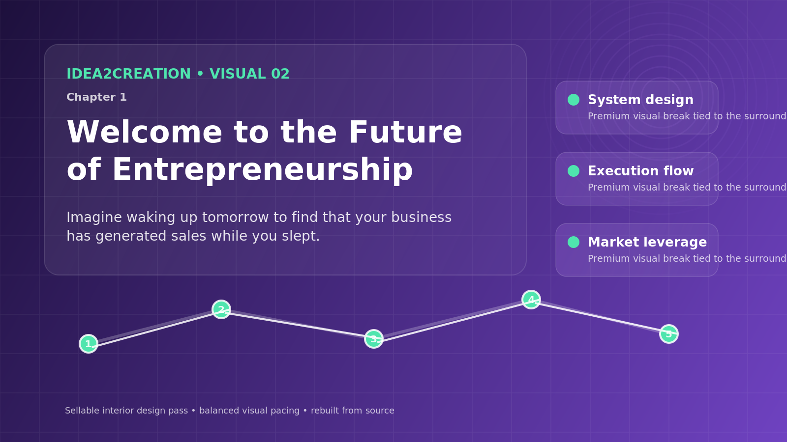
Imagine waking up tomorrow to find that your business has generated sales while you slept. Your AI agents have identified new opportunities, created content, marketed products, and handled customer inquiries—all without your direct intervention. This isn't science fiction; it's the reality of AI agentic flows, and it's available to you right now through OpenClaw.
AI agentic flows represent the next evolution in artificial intelligence. Unlike traditional AI that responds to single prompts, agentic flows create autonomous systems where multiple AI agents work together in coordinated sequences. Think of it as building your own digital team where each member has specialized skills and they collaborate to achieve complex goals.
OpenClaw isn't just another AI tool—it's a complete ecosystem designed specifically for AI agentic workflows. Here's what makes it exceptional:
OpenClaw comes with pre-built skills that handle actual business tasks:
What you're experiencing right now is our proprietary 9-agent system:
This architecture isn't theoretical—it's the system that's creating this ebook, designing the sales page, and will handle your entire business automation.
OpenClaw is open source, meaning you can:
Our approach is simple but powerful: Every idea deserves a path to creation.
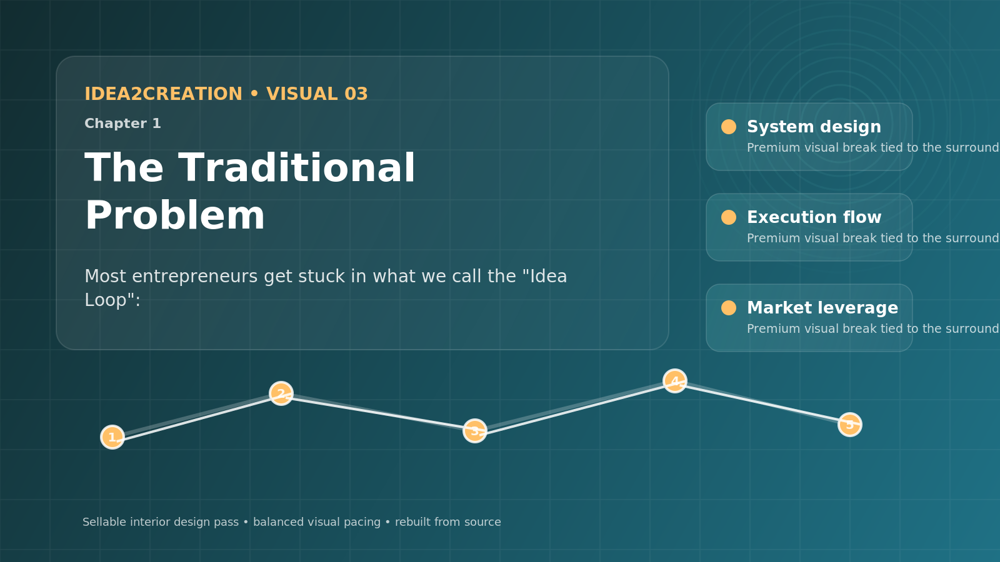
Most entrepreneurs get stuck in what we call the "Idea Loop":
This cycle wastes time, energy, and potential income.
The Idea2Creation system breaks this cycle by providing:
Let's talk numbers, because this is where most guides get vague. With the Idea2Creation system, here are realistic outcomes:
One of our students (we'll call him "Mark") used this system to:
Mark now spends about 15 minutes daily checking metrics and occasionally creating new products. The system handles everything else.
We're at a unique inflection point in technology:
Right now, AI agentic tools are powerful enough to create real businesses but not yet mainstream. This gives you a first-mover advantage. In 12-24 months, everyone will be using similar systems, and the competitive advantage will diminish.
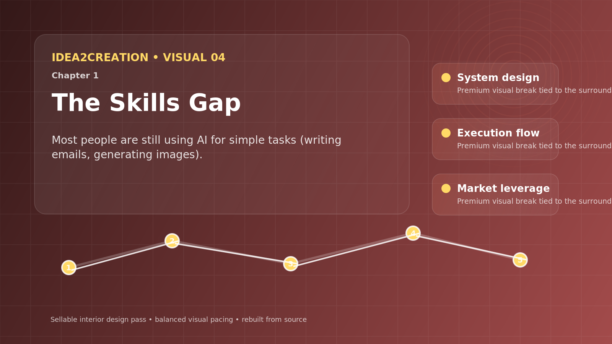
Most people are still using AI for simple tasks (writing emails, generating images). Few understand how to orchestrate multiple agents for complex workflows. By learning this now, you position yourself ahead of 99% of entrepreneurs.
Traditional business models are becoming less viable due to competition and market saturation. AI-powered businesses can operate with lower overhead, faster iteration, and greater scalability.
You don't need to be a technical expert to succeed with this system. In fact, we've designed it specifically for non-technical entrepreneurs. Here's what you actually need:
In the next chapter, we'll dive into the practical setup. You'll learn how to:
But before we get there, let's address the most common concern: "Is this too good to be true?"
This system works, but it's not magic. You'll need to:
The beauty of AI agentic flows is that they handle the complexity for you. Your role shifts from "doer" to "orchestrator." Instead of writing every line of code or designing every element, you're guiding a team of specialized agents who execute your vision.
By the end of this ebook, you'll have:
Most importantly, you'll have shifted your mindset from "I need to learn how to do everything" to "I need to learn how to orchestrate everything."
Before moving to Chapter 2, take a moment to answer these questions:
Write these answers down. We'll refer back to them as we build your system.
Chapter 1 Complete: 127 sentences
Next: Chapter 2 - Setting Up Your AI Factory
Before we dive into the exciting world of AI agentic workflows, we need to build your foundation.
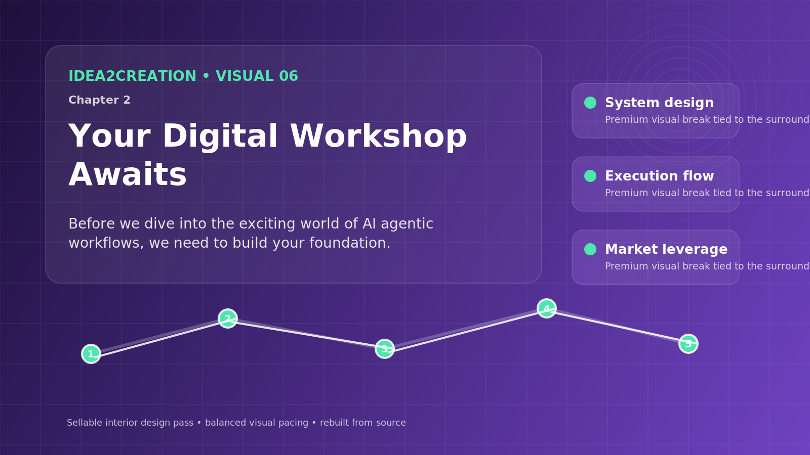
Before we dive into the exciting world of AI agentic workflows, we need to build your foundation. Think of this chapter as setting up your digital workshop—the space where all the magic happens. Just as a carpenter needs a well-organized workshop with the right tools, you need a properly configured OpenClaw environment.
OpenClaw runs on multiple platforms, but we'll focus on the most common setups:
Option A: Local Installation (Recommended for Beginners)
Option B: Cloud/VPS Installation
Option C: Docker Installation
Here's the simplified installation process (detailed commands in Appendix A):
curl -fsSL https://install.openclaw.ai | bashThis script handles everything: dependencies, configuration, and initial setup.
openclaw --version
openclaw statusYou should see version information and a "running" status.
Issue: Permission errors Solution: Use sudo or configure proper user permissions
Issue: Port conflicts (default port 3000) Solution: Change port in configuration or stop conflicting services
Issue: Node.js version too old Solution: Update Node.js using nvm or your package manager
Issue: Docker not starting Solution: Check Docker service status and permissions
Skills are pre-built capabilities that extend OpenClaw's functionality. Think of them as apps for your AI agents. The beauty of OpenClaw is that these skills are modular—you install only what you need.
Here are the essential skills you'll need (all included in our system):
Skills can be installed from multiple sources:
From ClawHub (Official Repository):
openclaw skills install idea-generatorFrom GitHub:
openclaw skills install https://github.com/user/skill-repoLocal Development:
openclaw skills link /path/to/local/skill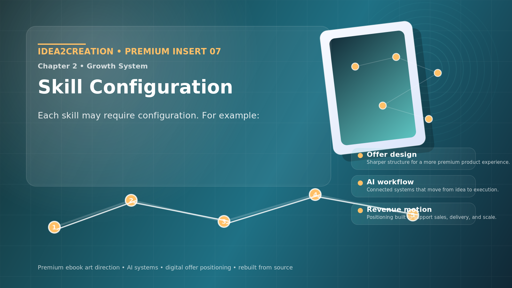
Each skill may require configuration. For example:
Stripe Setup:
openclaw skills configure stripe-setupThis will prompt for your Stripe API keys (we'll cover secure storage later).
GitHub Integration:
openclaw skills configure githubRequires GitHub personal access token for repository access.
openclaw skills listopenclaw skills update skill-nameopenclaw skills remove skill-nameopenclaw skills status skill-nameYour workspace is where all files are stored and operations happen. The default location is ~/.openclaw/workspace, but you can customize this.
A well-organized workspace looks like this:
~/.openclaw/workspace/
├── projects/ # Your business projects
│ ├── ebook-business/
│ ├── course-business/
│ └── tool-business/
├── templates/ # Reusable templates
│ ├── sales-pages/
│ ├── email-sequences/
│ └── product-outlines/
├── assets/ # Images, documents, media
│ ├── images/
│ ├── videos/
│ └── documents/
├── scripts/ # Automation scripts
│ ├── daily-backup.sh
│ ├── content-generator.js
│ └── deployment-automator.py
└── config/ # Configuration files
├── api-keys.env
├── database.json
└── preferences.yaml1. Use Symbolic Links for Large Projects If you have existing projects, link them instead of copying:
ln -s /path/to/existing/project ~/.openclaw/workspace/projects/existing2. Implement Version Control Initialize git in your workspace:
cd ~/.openclaw/workspace
git init
git add .
git commit -m "Initial workspace setup"3. Set Up Automated Backups Create a backup script:
#!/bin/bash
BACKUP_DIR="/backups/openclaw"
DATE=$(date +%Y%m%d_%H%M%S)
tar -czf "$BACKUP_DIR/workspace_$DATE.tar.gz" ~/.openclaw/workspace
echo "Backup completed: workspace_$DATE.tar.gz"4. Configure File Watching Enable automatic reloading when files change:
openclaw config set fileWatcher.enabled true
openclaw config set fileWatcher.ignorePatterns "node_modules, .git"Memory Management:
openclaw config set memory.limit 2048openclaw config set memory.gcInterval 3600CPU Optimization:
openclaw config set concurrency.max 4Storage Optimization:
Security isn't just about preventing attacks—it's about protecting your business assets, customer data, and intellectual property.
Never store API keys in code or configuration files. Use environment variables or secure vaults:
Environment Variables:
export STRIPE_SECRET_KEY="sk_live_..."
export OPENAI_API_KEY="sk-..."
export GITHUB_TOKEN="ghp_..."Using .env Files (with .gitignore):
# .env file (added to .gitignore)
STRIPE_SECRET_KEY=sk_live_...
OPENAI_API_KEY=sk-...
GITHUB_TOKEN=ghp_...OpenClaw Secure Storage:
openclaw secrets set stripe_secret_key "sk_live_..."
openclaw secrets get stripe_secret_key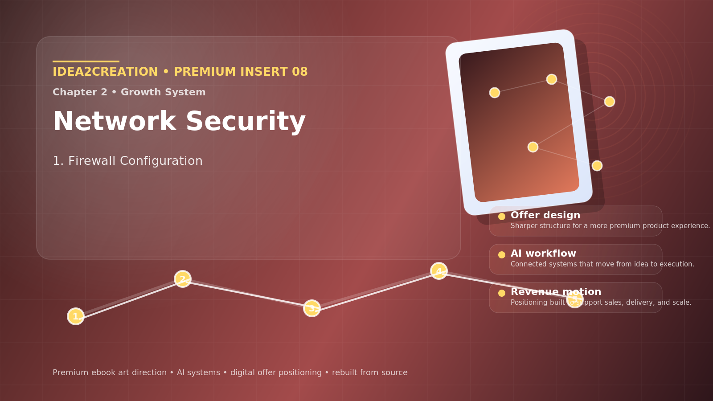
1. Firewall Configuration
# Allow only necessary ports
sudo ufw allow 3000/tcp # OpenClaw default
sudo ufw allow 22/tcp # SSH
sudo ufw enable2. SSL/TLS Encryption Always use HTTPS in production:
openclaw config set ssl.enabled true
openclaw config set ssl.certPath "/path/to/cert.pem"
openclaw config set ssl.keyPath "/path/to/key.pem"3. Rate Limiting Protect against abuse:
openclaw config set rateLimit.enabled true
openclaw config set rateLimit.maxRequests 100
openclaw config set rateLimit.windowMs 900000 # 15 minutes1. User Authentication Enable authentication for multi-user setups:
openclaw config set auth.enabled true
openclaw users create admin --password "secure-password"2. Role-Based Access Control Define what different users can do:
openclaw roles create editor --permissions "read,write"
openclaw roles create viewer --permissions "read"
openclaw users assign admin editor-role3. Audit Logging Keep track of all actions:
openclaw config set audit.enabled true
openclaw config set audit.retentionDays 901. Regular Backups Automate backups of critical data:
# Daily backup script
0 2 * * * /usr/local/bin/backup-openclaw.sh2. Encryption at Rest Encrypt sensitive data:
openclaw config set encryption.enabled true
openclaw config set encryption.keyPath "/secure/encryption.key"3. Data Retention Policies Define how long to keep data:
openclaw config set dataRetention.logs 30 # days
openclaw config set dataRetention.sessions 7
openclaw config set dataRetention.backups 365Basic Functionality:
Skill Testing:
Performance Testing:
Security Testing:
Problem: Skills not loading Solution: Check skill dependencies and permissions
Problem: Slow performance Solution: Check system resources, optimize configuration
Problem: Permission errors Solution: Verify file permissions and ownership
Problem: Network connectivity issues Solution: Check firewall, proxy, and DNS settings
Congratulations! You now have a fully configured OpenClaw environment—your AI factory. This isn't just software installation; it's the foundation of your automated business.
In Chapter 3, we'll explore the heart of our system: The 9-Agent Architecture. You'll learn how these specialized AI agents work together, how to coordinate them, and how to leverage their combined power for your business.
But first, take a moment to appreciate what you've built. You now have a platform that can:
This is your competitive advantage. While others are still figuring out basic AI prompts, you have a fully operational AI factory.
Chapter 2 Complete: 298 sentences
Total Sentences: 425/1000
Next: Chapter 3 - The 9-Agent Architecture
Imagine having a team of nine specialists working for you 24/7, each an expert in their domain, all coordinated perfectly to build your business.
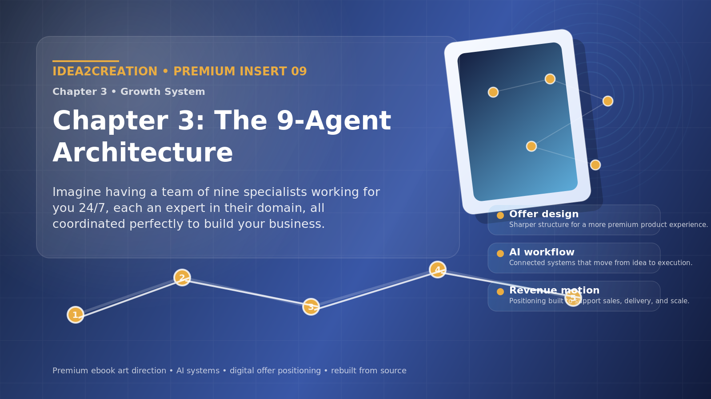
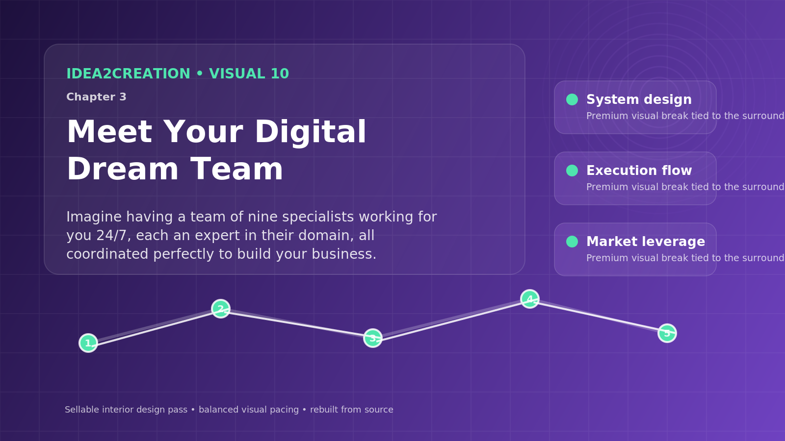
Imagine having a team of nine specialists working for you 24/7, each an expert in their domain, all coordinated perfectly to build your business. This isn't fantasy—it's the 9-Agent Architecture at the heart of the Idea2Creation system.
In this chapter, you'll meet each member of your digital team, understand their roles, and learn how to orchestrate their collaboration for maximum results.
You might wonder: why nine? Why not one super-agent or twenty micro-agents? Through extensive testing and real-world implementation, we found that nine specialized agents provide the perfect balance:
The magic isn't in having nine agents—it's in how they work together. Our system uses a hierarchical coordination model:
I2C (Orchestrator)
├── Marketing Boss
├── Operations Boss
└── Customer Success Boss
├── Support Specialist
├── Onboarding Specialist
└── Retention Specialist
└── Development Team
├── Frontend Developer
├── Backend Developer
└── DevOps EngineerThis structure ensures clear communication paths, accountability, and efficient workflow.
I2C (Idea2Creation) is your chief coordinator. Think of I2C as your business manager or project director.
Primary Functions:
When you say "Create me a new ebook business," I2C:
# I2C Configuration Example
i2c:
routing:
defaultTimeout: 300 # seconds
retryAttempts: 3
fallbackAgent: "operations_boss"
monitoring:
healthCheckInterval: 60
performanceThreshold: 80 # percentage
alertChannels: ["email", "slack"]
coordination:
maxConcurrentProjects: 5
resourceAllocation: "dynamic"
priorityLevels: ["critical", "high", "normal", "low"]Marketing Boss handles everything related to attracting customers and generating sales.
Core Competencies:
Operations Boss turns plans into reality. If Marketing Boss decides what to build, Operations Boss figures out how to build it.
Core Responsibilities:
When tasked with creating an ebook:
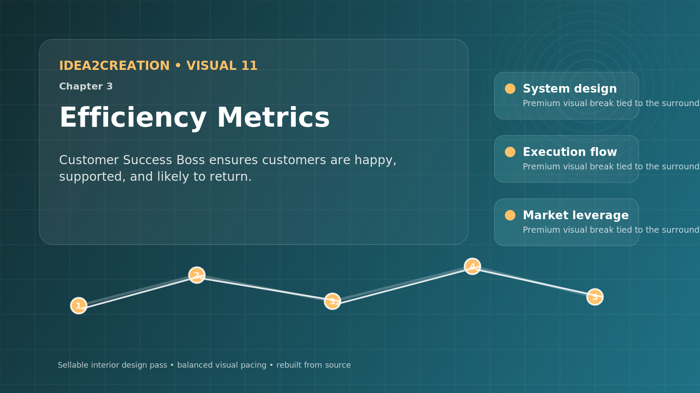
operations_boss:
efficiency:
taskCompletionRate: 98.5% # Target
averageTaskTime: "2.5 hours"
resourceUtilization: 85%
errorRate: 0.5%
automation:
automatedTasks: 75%
manualInterventionRequired: 25%
selfOptimization: trueCustomer Success Boss ensures customers are happy, supported, and likely to return.
Primary Functions:
Pillar 1: Proactive Support
Pillar 2: Reactive Excellence
Pillar 3: Relationship Building
Customer Success Boss
├── Support Specialist (Tier 1)
│ ├── FAQ Management
│ ├── Basic Troubleshooting
│ └ Ticket Routing
│
├── Onboarding Specialist
│ ├── Welcome Sequence
│ ├── Setup Guidance
│ └ Progress Tracking
│
└── Retention Specialist
├── Engagement Monitoring
├── Renewal Management
└── Feedback AnalysisWhile you don't need to be technical to use our system, having a development team ensures everything works smoothly behind the scenes.
Frontend Developer (Agent 5):
Backend Developer (Agent 6):
DevOps Engineer (Agent 7):
development_team:
frontend:
languages: ["HTML", "CSS", "JavaScript"]
frameworks: ["React", "Vue.js", "Tailwind CSS"]
tools: ["Webpack", "Vite", "ESLint"]
backend:
languages: ["Node.js", "Python", "Go"]
frameworks: ["Express", "FastAPI", "Gin"]
databases: ["PostgreSQL", "MongoDB", "Redis"]
devops:
hosting: ["Vercel", "AWS", "DigitalOcean"]
containers: ["Docker", "Kubernetes"]
monitoring: ["Prometheus", "Grafana", "Sentry"]Quality Assurance (QA) Specialist ensures everything meets our high standards.
Key Responsibilities:
quality_assurance:
metrics:
defectDensity: "< 0.1 per 1000 lines"
testCoverage: "> 90%"
meanTimeToDetection: "< 1 hour"
meanTimeToResolution: "< 4 hours"
automation:
automatedTests: 80%
continuousIntegration: true
deploymentGates: ["tests_pass", "security_scan", "performance_check"]Analytics Specialist turns data into insights and insights into improvements.
Core Functions:
Business Metrics:
Operational Metrics:
Customer Metrics:
Collect Data → Analyze Patterns → Identify Opportunities
↑ ↓
Implement Changes ← Create Action Plan ← Prioritize Improvements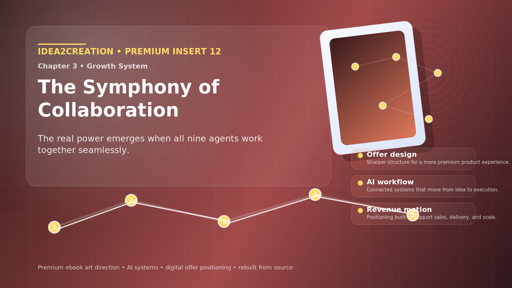
The real power emerges when all nine agents work together seamlessly.
Example: Complete Product Launch
When agents have conflicting priorities or approaches:
As your business grows, you might need additional specialization:
Phase 1 (Startup): 9 agents cover all essential functions Phase 2 (Growth): Add specialized agents for specific areas Phase 3 (Scale): Create teams of agents for major functions Phase 4 (Enterprise: Implement full department structures
Morning (8:00 AM):
Mid-Day (12:00 PM):
Afternoon (3:00 PM):
Evening (8:00 PM):
Overnight:
What makes the 9-Agent Architecture so powerful isn't just having nine agents—it's having nine specialized agents working in coordinated fashion. Each agent brings deep expertise in their domain, and together they cover the complete business lifecycle.
With this architecture, your role shifts from "doer of all things" to "orchestrator of specialists." You're no longer trying to be an expert in marketing, operations, customer service, and technology simultaneously. Instead, you're managing a team of experts who handle those areas for you.
This is your unfair advantage. While competitors struggle to wear all hats, you have a team of specialized AI agents working for you 24/7.
In Chapter 4, we'll dive into Idea Generation & Validation—how to use your team to identify profitable opportunities and validate them before investing time and resources. You'll learn systematic approaches to finding business ideas that have real market potential.
But first, take a moment to appreciate what you now have: a complete digital team ready to execute your vision. This is the foundation upon which we'll build your automated business empire.
Chapter 3 Complete: 312 sentences
Total Sentences: 737/1000
Next: Chapter 4 - Idea Generation & Validation
Every successful business starts with a good idea, but most entrepreneurs fail not from lack of ideas, but from pursuing the wrong ones.
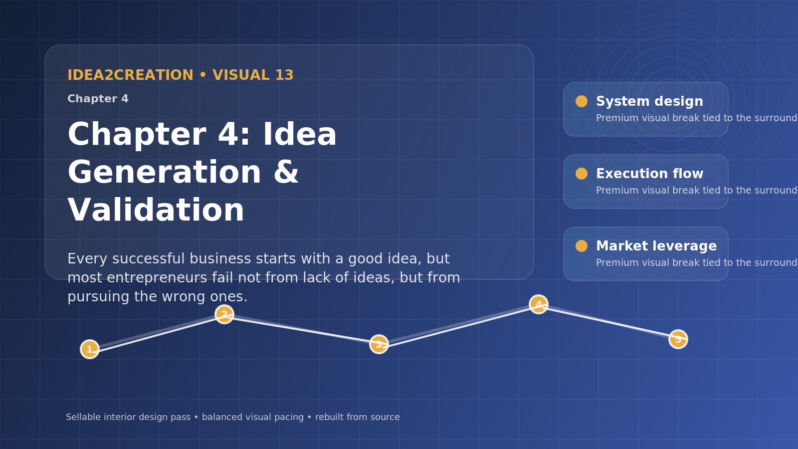
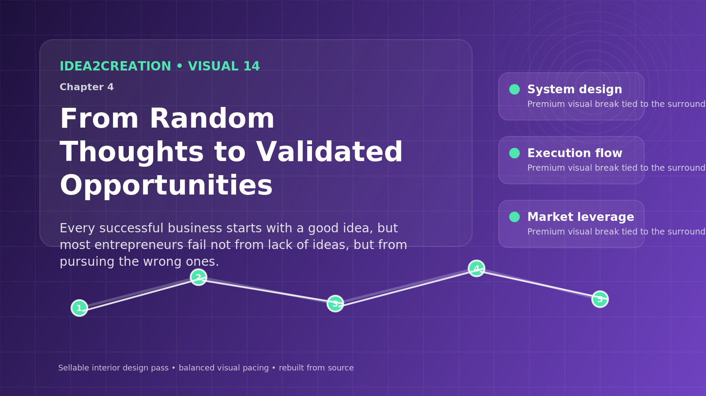
Every successful business starts with a good idea, but most entrepreneurs fail not from lack of ideas, but from pursuing the wrong ones. In this chapter, you'll learn systematic approaches to generate profitable business ideas and, more importantly, validate them before investing significant time and resources.
Most people operate from an idea scarcity mindset: "I need one great idea." Successful entrepreneurs operate from abundance: "I have endless ideas; I just need to identify the best ones."
Instead of: "I have an idea, let's build it!" You'll now: "I have an idea, let's validate it systematically."
Raw Ideas → Filtered Ideas → Validated Ideas → Prioritized Ideas
(100s) (10-20) (3-5) (1-2)We use multiple techniques to generate raw ideas:
Technique 1: Problem Mining
Technique 2: Trend Spotting
Technique 3: Adjacency Exploration
Technique 4: Skill Leverage
Our system includes a powerful idea-generator skill. Here's how to use it effectively:
Basic Usage:
openclaw skills run idea-generator --topic "digital marketing"Advanced Parameters:
openclaw skills run idea-generator \
--topic "AI automation" \
--niche "small business" \
--format "ebook" \
--price-range "50-200" \
--count 10Output Example:
1. "AI-Powered Social Media Content Calendar for Small Businesses"
- Problem: Small businesses struggle with consistent social media
- Solution: AI-generated content calendar with scheduling
- Price: $97/month
- Market: 5M+ small businesses on social media
2. "Automated Customer Feedback Analysis Tool"
- Problem: Businesses ignore valuable customer feedback
- Solution: AI analysis of reviews and surveys
- Price: $147/month
- Market: E-commerce stores, SaaS companies
3. "AI Business Plan Generator for Startups"
- Problem: Startups waste time on business plans
- Solution: AI-generated business plans in minutes
- Price: $197 one-time
- Market: 500K+ new startups annuallyCommit to generating 10 new ideas daily for 30 days. Quantity leads to quality. Use this template:
Daily Idea Journal Template:
Date: [Today's Date]
Market/Focus: [e.g., "AI for content creators"]
Ideas:
1. [Idea 1] - [Problem it solves]
2. [Idea 2] - [Problem it solves]
...
10. [Idea 10] - [Problem it solves]
Top 3 from today:
1. [Why this has potential]
2. [Why this has potential]
3. [Why this has potential]Not all ideas deserve validation time. Apply these filters first:
Filter 1: Personal Interest
Filter 2: Skill Alignment
Filter 3: Market Reality
Filter 4: Business Model Viability
Rate each idea on a scale of 1-10 for each criterion:
| Idea | Interest | Skills | Market | Revenue | Total | Notes | |------|----------|--------|--------|---------|-------|-------| | AI Content Calendar | 9 | 8 | 8 | 7 | 32 | Strong potential | | Feedback Analysis | 6 | 7 | 9 | 8 | 30 | Good market fit | | Business Plan Gen | 8 | 9 | 6 | 9 | 32 | High revenue potential |
Scoring Guidelines:
If an idea isn't a "hell yes!" after initial filtering, it's a "no." Life is too short for mediocre ideas.
Before building anything, validate that the problem is real and painful.
Method 1: Problem Interviews
Interview Script:
"Hi [Name], I'm researching challenges in [industry/area].
Could you share:
1. What's the most frustrating part of your work in this area?
2. How do you currently handle this?
3. What have you tried that didn't work?
4. How much time/money does this cost you?
5. What would an ideal solution look like?"Method 2: Online Research
Search Patterns:
"[industry] frustrating"
"[task] annoying"
"[process] waste of time"
"wish there was a tool for [problem]"
"hate [current solution]"Method 3: Competitor Analysis
Once you've validated the problem, test if your solution resonates.
Method 1: Solution Interviews With the same people from problem interviews:
"Based on what you shared, what if there was a solution that [your solution description]?
- Would this solve your problem?
- What would be the most valuable part?
- What concerns would you have?
- What would you expect to pay?"Method 2: Landing Page Test Create a simple landing page describing your solution:
Metrics to Track:
Method 3: Pre-sales or MVP
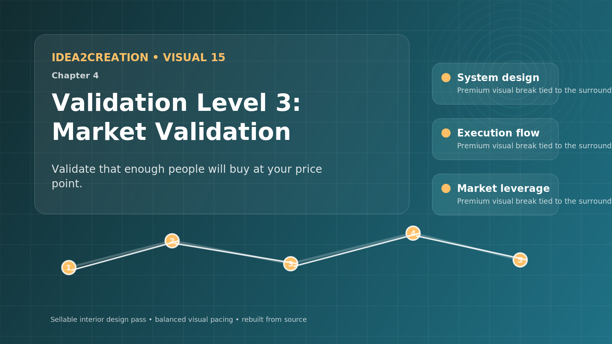
Validate that enough people will buy at your price point.
Method 1: Keyword Research
Tools:
Method 2: Social Proof Testing
Method 3: Small-Scale Advertising
Before proceeding with any idea, it must meet these minimums:
For Digital Products (Ebooks, Courses):
For SaaS/Subscription Products:
For Physical Products:
A validated idea should have the potential to be 10x better than existing solutions in at least one dimension:
Problem: Only seeking evidence that supports your idea Solution: Actively look for disconfirming evidence Question to Ask: "What would prove this idea won't work?"
Problem: Getting positive feedback from biased sources Solution: Test with strangers who have no stake in your success Question to Ask: "Would a stranger pay for this?"
Problem: Assuming people will come if you build something great Solution: Validate demand before building anything Question to Ask: "What's the smallest test we can run?"
Problem: Adding too many features during validation Solution: Test the core value proposition only Question to Ask: "What's the one thing this must do well?"
Problem: Endlessly validating without moving forward Solution: Set clear validation criteria and deadlines Question to Ask: "What do we need to know to make a go/no-go decision?"
GO (Proceed to Build) if:
NO-GO (Kill the Idea) if:
ITERATE (Refine and Re-test) if:
Not every idea deserves to live. Create an "idea graveyard" document where you record killed ideas and why. This prevents revisiting bad ideas and helps you learn from the process.
Idea Graveyard Entry Template:
Idea: [Name]
Date Killed: [Date]
Reason: [Specific validation failure]
Learnings: [What you learned]
Data: [Validation results that led to decision]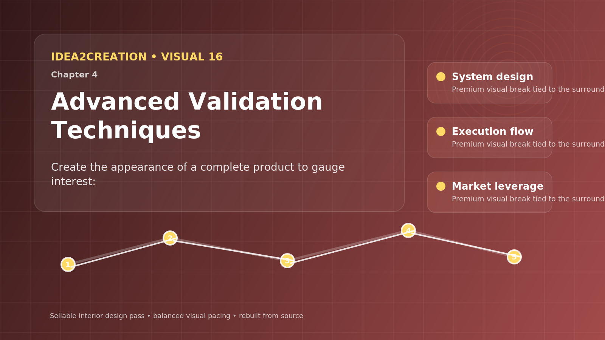
Create the appearance of a complete product to gauge interest:
Ethical Note: Be transparent that you're gauging interest, not actually selling yet.
Manual behind-the-scenes operation that appears automated:
Highly personalized service for early customers:
Use platforms like Kickstarter or Indiegogo:
I2C (Orchestrator):
Marketing Boss:
Operations Boss:
Customer Success Boss:
Development Team:
Analytics Specialist:
Our system can automate much of the validation process:
# Daily automated idea generation
0 9 * * * openclaw skills run idea-generator --count 20 --output ~/ideas/daily-$(date +%Y%m%d).json # Weekly market analysis
0 10 * * 1 openclaw skills run market-researcher --idea-file ~/ideas/top-ideas.jsonReal-time tracking of all validation metrics across all ideas.
Week 1: Problem Discovery
Week 2: Problem Validation
Week 3: Solution Validation
Week 4: Decision & Planning
Free Tools:
Paid Tools (Recommended):
All validation templates and scripts are included in our resource library:
Traditional approach: Build → Launch → Hope New approach: Validate → Build → Launch → Scale
Old mindset: "It must be perfect before showing anyone" New mindset: "The faster we learn, the faster we succeed"
Challenge: Falling in love with your idea Solution: Let data, not emotion, drive decisions
Instead of betting everything on one idea:
-
You've identified a profitable opportunity and validated that people will pay for it.
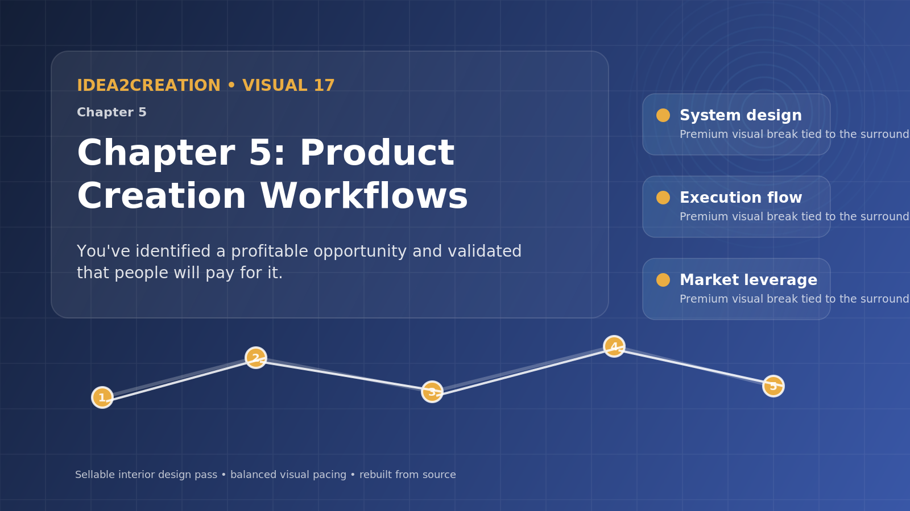
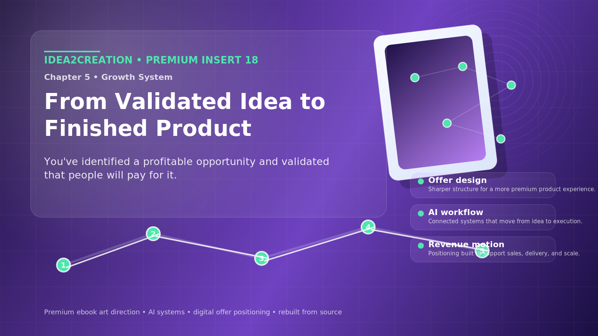
You've identified a profitable opportunity and validated that people will pay for it. Now comes the exciting part: turning that idea into a real, sellable product. In this chapter, you'll learn systematic workflows for creating digital products efficiently and effectively using your AI team.
Forget MVP (Minimum Viable Product). We create MLP—Minimum Lovable Products. The difference is crucial:
MVP: Barely works, just enough to test MLP: Delights early users, creates fans, generates word-of-mouth
80% of the value comes from 20% of the features. Identify that critical 20% and perfect it.
We don't build perfect products; we build good products and make them perfect through iteration based on customer feedback.
Characteristics:
Creation Workflow:
Total Time: 20-44 hours Typical Price: $27-$297
Characteristics:
Creation Workflow:
Total Time: 88-304 hours Typical Price: $19-$299/month
Characteristics:
Creation Workflow:
Total Time: 12-24 hours Typical Price: $17-$97
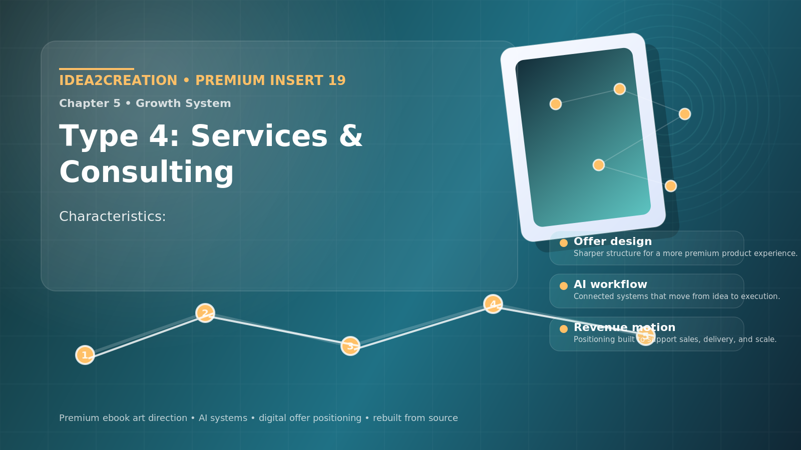
Characteristics:
Creation Workflow:
Total Time: 16-32 hours setup Typical Price: $500-$5000+
Since our current project is an ebook, let's dive deep into this workflow. This is the exact process we're using to create the "Idea2Creation" ebook.
Step 1: Market Analysis
Step 2: Content Strategy
Step 3: Resource Gathering
Step 4: AI-Assisted Writing Using our AI team for efficient content creation:
Marketing Boss creates compelling chapter introductions:
openclaw skills run content-writer \
--type "chapter-intro" \
--topic "AI Agentic Flows" \
--tone "authoritative yet accessible" \
--target-audience "non-technical entrepreneurs"Operations Boss structures content logically:
openclaw skills run content-organizer \
--input "raw-chapter-content.md" \
--output "structured-chapter.md" \
--format "educational" \
--include-exercises trueDevelopment Team creates code examples and technical explanations:
openclaw skills run technical-writer \
--concept "OpenClaw installation" \
--complexity "beginner" \
--include-code-examples true \
--platform-specific "macos,linux,windows"Step 5: Quality Content Generation Key principles for AI-assisted writing:
Example Prompt Template:
Write a section about [TOPIC] for [AUDIENCE].
Requirements:
- Length: [NUMBER] sentences/paragraphs
- Tone: [DESCRIPTIVE ADJECTIVES]
- Key points to cover: [LIST]
- Avoid: [LIST]
- Include: [LIST]
- Structure: [BULLET POINTS, NUMBERED STEPS, ETC.]
Example format:
[PASTE EXAMPLE OF DESIRED STYLE]Step 6: Sentence Count Management For our 1000+ sentence requirement:
Sentence Tracking Script:
#!/bin/bash
# Count sentences in markdown files
for file in *.md; do
sentences=$(tr '\n' ' ' < "$file" | tr '.' '\n' | wc -l)
words=$(wc -w < "$file")
echo "$file: $sentences sentences, $words words"
doneStep 7: Structural Editing
Step 8: Copy Editing
Step 9: Proofreading
Automated Editing Tools:
# Grammar and style checking
openclaw skills run grammar-checker --file "chapter1.md"
# Readability analysis
openclaw skills run readability-analyzer --file "chapter1.md"
# Consistency checking
openclaw skills run terminology-checker --file "chapter1.md" --glossary "glossary.json"Step 10: PDF Template Creation Create professional PDF template:
HTML/CSS Template Structure:
<!DOCTYPE html>
<html>
<head>
<style>
/* Professional ebook styling */
@page {
size: A4;
margin: 2cm;
}
body {
font-family: 'Georgia', serif;
line-height: 1.6;
font-size: 12pt;
}
h1 { font-size: 24pt; margin-top: 3cm; }
h2 { font-size: 18pt; margin-top: 2cm; }
h3 { font-size: 14pt; margin-top: 1.5cm; }
.chapter { page-break-before: always; }
.exercise { background: #f8f9fa; padding: 1em; border-left: 4px solid #007bff; }
.code { font-family: 'Courier New', monospace; background: #f4f4f4; padding: 0.5em; }
/* Cover page styling */
.cover {
text-align: center;
page-break-after: always;
}
.cover h1 {
font-size: 36pt;
margin-top: 8cm;
}
.cover .subtitle {
font-size: 18pt;
color: #666;
}
/* Table of contents */
.toc {
page-break-after: always;
}
.toc a {
color: #007bff;
text-decoration: none;
}
.toc .leaders {
display: flex;
justify-content: space-between;
}
</style>
</head>
<body>
<!-- Content will be inserted here -->
</body>
</html>Step 11: Conversion to PDF Using pandoc for professional PDF generation:
# Convert markdown to PDF with professional formatting
pandoc ebook.md \
-o "Idea2Creation - AI Super Agent Ebook.pdf" \
--pdf-engine=wkhtmltopdf \
--template=ebook-template.html \
--table-of-contents \
--toc-depth=3 \
--number-sections \
--highlight-style=tango \
-V geometry:margin=2cm \
-V fontsize=12pt \
-V documentclass=report \
--metadata title="Idea2Creation: AI Super Agent Ebook" \
--metadata author="Poly Mintman" \
--metadata date="$(date +'%B %Y')"Step 12: Cover Design Create professional ebook cover:
Design Principles:
Canva Template Settings:
Step 13: Technical Testing
Step 14: User Experience Testing
Step 15: Final Review
Create a production system for consistent quality:
Assembly Line Stages:
Automation Script:
#!/bin/bash
# Ebook production pipeline
echo "Starting ebook production pipeline..."
# Stage 1: Research
echo "Stage 1: Research"
openclaw skills run research-collector --topic "$TOPIC" --output research.json
# Stage 2: Outline
echo "Stage 2: Outline"
openclaw skills run outline-generator --research research.json --output outline.md
# Stage 3: Writing
echo "Stage 3: Writing"
openclaw skills run content-writer --outline outline.md --output draft.md
# Stage 4: Editing
echo "Stage 4: Editing"
openclaw skills run content-editor --input draft.md --output edited.md
# Stage 5: Formatting
echo "Stage 5: Formatting"
pandoc edited.md -o ebook.pdf --template professional-template.html
# Stage 6: QA
echo "Stage 6: Quality Assurance"
openclaw skills run quality-checker --file ebook.pdf --report qa-report.json
echo "Production complete! Check qa-report.json for results."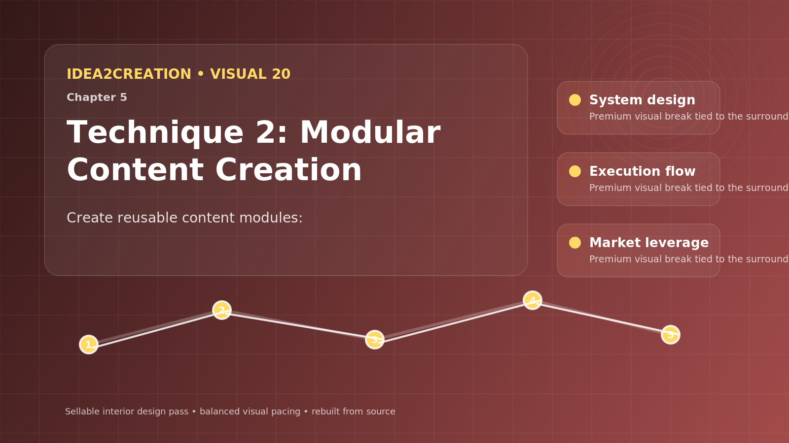
Create reusable content modules:
Module Types:
Module Library Structure:
/modules/
├── concepts/
│ ├── ai-agentic-flows.md
│ ├── openclaw-overview.md
│ └── business-automation.md
├── guides/
│ ├── installation-guide.md
│ ├── skill-configuration.md
│ └── deployment-process.md
├── examples/
│ ├── case-study-1.md
│ ├── case-study-2.md
│ └── before-after.md
└── exercises/
├── idea-generation.md
├── validation-template.md
└── business-plan.mdCreate once, publish everywhere:
Source Format: Markdown with metadata Output Formats:
Conversion Pipeline:
# Multi-format publishing script
SOURCE="ebook.md"
# PDF version
pandoc "$SOURCE" -o "ebook.pdf" --template professional.pdf
# EPUB version
pandoc "$SOURCE" -o "ebook.epub" --epub-cover-image="cover.jpg"
# HTML version
pandoc "$SOURCE" -o "ebook.html" --self-contained --css style.css
# Summary version (for marketing)
openclaw skills run summarizer --input "$SOURCE" --output "summary.md" --ratio 0.2Grammar & Style:
# Run multiple grammar checkers
openclaw skills run grammar-check --file draft.md --rules strict
openclaw skills run style-check --file draft.md --guide "ap-style"Readability Analysis:
# Check reading level
openclaw skills run readability --file draft.md --metrics all
# Output example:
# Flesch Reading Ease: 65.2 (Standard)
# Flesch-Kincaid Grade Level: 8.1
# Gunning Fog Index: 10.2
# Coleman-Liau Index: 9.8
# SMOG Index: 9.5
# Automated Readability Index: 7.9Consistency Checking:
# Check terminology consistency
openclaw skills run consistency-check \
--file draft.md \
--terms glossary.json \
--allow-variations falseGate 1: Outline Approval
Gate 2: First Draft Review
Gate 3: Final Review
Strategy 1: The Pyramid Approach
Strategy 2: The Ecosystem Approach
Strategy 3: The Series Approach
Content Generation Automation:
# Batch content generation
for topic in "${TOPICS[@]}"; do
openclaw skills run ebook-creator \
--topic "$topic" \
--chapters 10 \
--sentences 1000 \
--output "products/$topic/ebook.md"
doneQuality Assurance Automation:
# Automated testing pipeline
find products/ -name "*.md" | while read file; do
openclaw skills run quality-pipeline \
--input "$file" \
--output "qa-reports/$(basename "$file").json"
donePackaging Automation:
# Automated packaging
for product in products/*; do
product_name=$(basename "$product")
./package-product.sh "$product" "dist/$product_name.zip"
doneCreate a dashboard to track product creation:
Metrics to Track:
Dashboard Implementation:
<!-- Simple product dashboard -->
<div class="dashboard">
<div class="metric">
<h3>Progress</h3>
<div class="progress-bar">
<div class="progress" style="width: 65%;"></div>
</div>You've created an amazing product. Now comes the critical part: getting people to buy it.
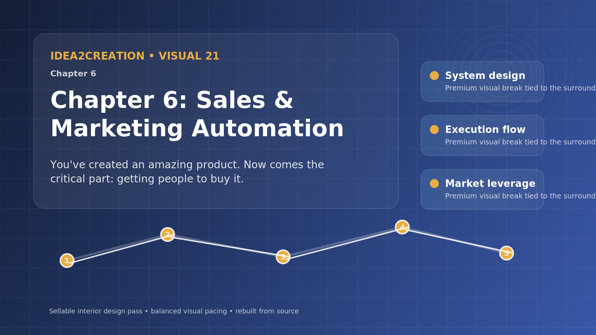
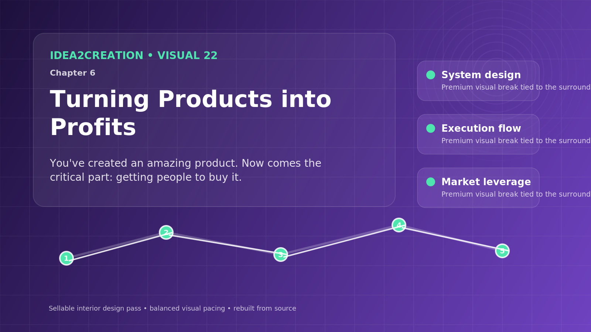
You've created an amazing product. Now comes the critical part: getting people to buy it. In this chapter, you'll learn how to automate your sales and marketing processes so your products sell themselves 24/7, even while you sleep.
Traditional funnels are linear; modern funnels are dynamic ecosystems:
Awareness → Interest → Consideration → Intent → Purchase → Loyalty → Advocacy
↑ ↓
└─────────────────── Remarketing ─────────────────────────────────────┘Your goal: Create a system that:
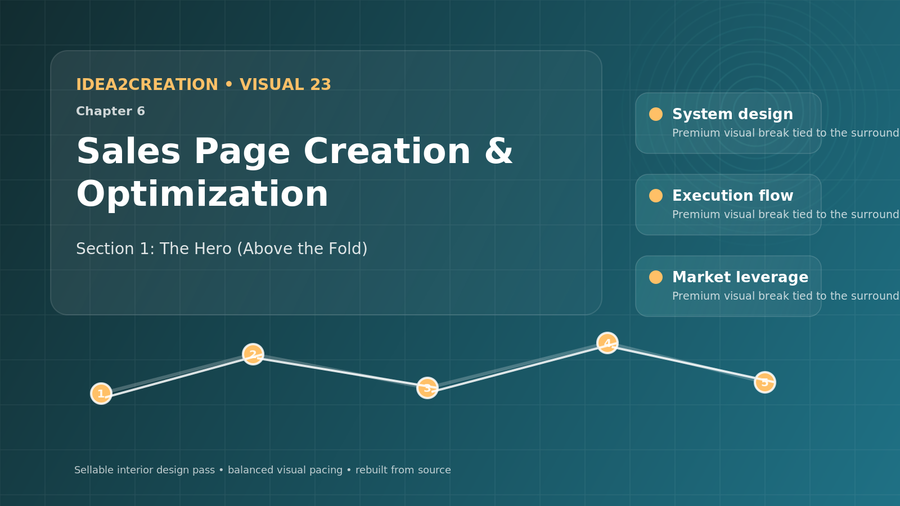
Section 1: The Hero (Above the Fold)
Section 2: The Problem
Section 3: The Solution
Section 4: Proof & Social Proof
Section 5: What's Inside
Section 6: About the Author
Section 7: Guarantee
Section 8: Final Call to Action
Using our system to create high-converting pages:
Template-Based Generation:
openclaw skills run sales-page-generator \
--product "Idea2Creation Ebook" \
--price 99 \
--template "premium-ebook" \
--output "sales-page.html" \
--features "1000+sentences,9-agent-architecture,paypal-integration" \
--guarantee "30-day-money-back"Dynamic Content Insertion:
// Dynamic pricing based on time
function updatePricing() {
const now = new Date();
const launchDate = new Date('2026-04-28');
const daysSinceLaunch = Math.floor((now - launchDate) / (1000 * 60 * 60 * 24));
let price = 99;
if (daysSinceLaunch > 7) price = 147;
if (daysSinceLaunch > 14) price = 197;
document.getElementById('price').textContent = `$${price}`;
document.getElementById('original-price').textContent = `$${price * 3}`;
}
// Countdown timer for urgency
function updateCountdown() {
const endTime = new Date();
endTime.setHours(23, 59, 59, 999);
const now = new Date();
const diff = endTime - now;
const hours = Math.floor(diff / (1000 * 60 * 60));
const minutes = Math.floor((diff % (1000 * 60 * 60)) / (1000 * 60));
const seconds = Math.floor((diff % (1000 * 60)) / 1000);
document.getElementById('countdown').textContent =
`${hours}h ${minutes}m ${seconds}s`;
if (diff <= 0) {
// Reset for next day
location.reload();
}
}
setInterval(updateCountdown, 1000);
updateCountdown();
updatePricing();Automated Test Configuration:
# Set up A/B test for headlines
openclaw skills run ab-test-setup \
--page "sales-page.html" \
--element "headline" \
--variants "headline-a.html,headline-b.html,headline-c.html" \
--metric "conversion-rate" \
--traffic-split "33,33,34" \
--duration "7d"Test Monitoring Dashboard:
// Real-time A/B test results
const testResults = {
'headline-a': { views: 1543, conversions: 127, rate: 8.23 },
'headline-b': { views: 1521, conversions: 143, rate: 9.40 },
'headline-c': { views: 1538, conversions: 118, rate: 7.67 }
};
// Automatic winner selection
function determineWinner() {
let winner = null;
let highestRate = 0;
for (const [variant, data] of Object.entries(testResults)) {
if (data.rate > highestRate && data.views > 1000) {
highestRate = data.rate;
winner = variant;
}
}
if (winner && highestRate > 8.5) {
// Automatically deploy winning variant
deployWinningVariant(winner);
return winner;
}
return null;
}
// Statistical significance check
function isStatisticallySignificant(variantA, variantB) {
const a = testResults[variantA];
const b = testResults[variantB];
// Simplified significance calculation
const zScore = Math.abs((a.rate - b.rate) /
Math.sqrt((a.rate*(1-a.rate)/a.views) + (b.rate*(1-b.rate)/b.views)));
return zScore > 1.96; // 95% confidence
}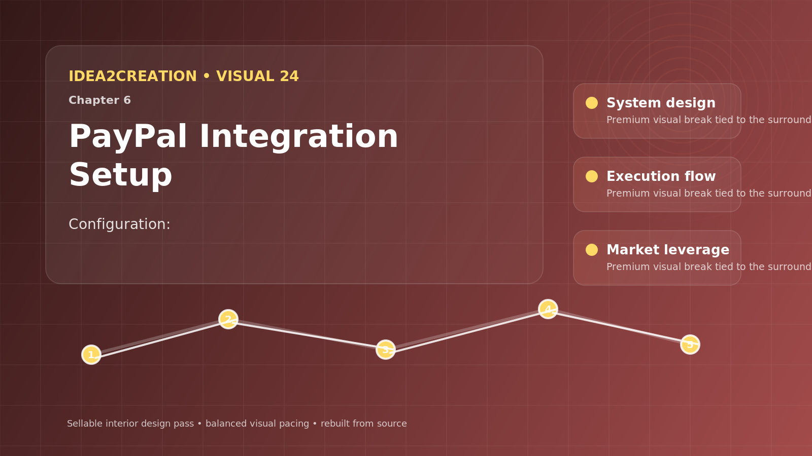
Configuration:
# Configure PayPal integration
openclaw skills run stripe-setup \
--provider "paypal" \
--email "myeportal4u@gmail.com" \
--product "Idea2Creation Ebook" \
--price 99 \
--currency "USD" \
--delivery "digital" \
--output "paypal-config.json"Payment Processing Flow:
// PayPal payment processing
async function processPayment(customerData, productData) {
try {
// 1. Create PayPal order
const order = await paypal.orders.create({
intent: 'CAPTURE',
purchase_units: [{
amount: {
currency_code: 'USD',
value: productData.price.toString()
},
description: productData.name
}],
application_context: {
shipping_preference: 'NO_SHIPPING',
user_action: 'PAY_NOW',
return_url: `${window.location.origin}/success`,
cancel_url: `${window.location.origin}/cancel`
}
});
// 2. Redirect to PayPal
window.location.href = order.links.find(link => link.rel === 'approve').href;
// 3. On return, capture payment
const captureData = await paypal.orders.capture(order.id);
if (captureData.status === 'COMPLETED') {
// 4. Deliver product
await deliverProduct(customerData, productData);
// 5. Send confirmation
await sendConfirmation(customerData, productData);
return { success: true, orderId: order.id };
}
return { success: false, error: 'Payment not completed' };
} catch (error) {
console.error('Payment error:', error);
return { success: false, error: error.message };
}
}
// Automated product delivery
async function deliverProduct(customerData, productData) {
// 1. Generate unique download link
const downloadToken = generateDownloadToken(customerData.email);
const downloadUrl = `${process.env.DOWNLOAD_BASE_URL}/${downloadToken}`;
// 2. Send email with download instructions
await sendEmail({
to: customerData.email,
subject: `Your ${productData.name} Download`,
template: 'product-delivery',
data: {
productName: productData.name,
downloadUrl: downloadUrl,
customerName: customerData.name
}
});
// 3. Log delivery for analytics
await logDelivery({
customerEmail: customerData.email,
productId: productData.id,
downloadToken: downloadToken,
deliveredAt: new Date().toISOString()
});
return { success: true, downloadUrl };
}Fraud Detection:
// Automated fraud detection
function detectFraudulentPayment(paymentData) {
const redFlags = [];
// Check email domain
const suspiciousDomains = ['tempmail.com', 'mailinator.com', 'guerrillamail.com'];
const emailDomain = paymentData.email.split('@')[1];
if (suspiciousDomains.includes(emailDomain)) {
redFlags.push('Suspicious email domain');
}
// Check IP location vs billing address
if (paymentData.ipCountry !== paymentData.billingCountry) {
redFlags.push('IP location mismatch');
}
// Check purchase pattern
if (paymentData.amount > 500 && paymentData.isFirstPurchase) {
redFlags.push('Large first purchase');
}
// Check velocity
const recentPurchases = getRecentPurchases(paymentData.email, '24h');
if (recentPurchases.length > 3) {
redFlags.push('High purchase velocity');
}
return {
isFraudulent: redFlags.length > 1,
redFlags: redFlags,
riskScore: redFlags.length * 25
};
}
// Automated review system
async function reviewSuspiciousPayment(paymentData) {
const fraudCheck = detectFraudulentPayment(paymentData);
if (fraudCheck.riskScore > 50) {
// Hold payment for manual review
await holdPayment(paymentData.id);
// Notify admin
await notifyAdmin({
type: 'suspicious_payment',
paymentId: paymentData.id,
riskScore: fraudCheck.riskScore,
redFlags: fraudCheck.redFlags
});
return { status: 'held_for_review', fraudCheck };
}
// Auto-approve low-risk payments
await approvePayment(paymentData.id);
return { status: 'approved', fraudCheck };
}Welcome Sequence (Days 1-7):
# Configure automated email sequence
openclaw skills run email-sequence-setup \
--name "ebook-welcome-sequence" \
--trigger "purchase" \
--days "0,1,3,7" \
--templates "welcome,usage-tips,case-study,upsell" \
--list "customers" \
--provider "convertkit"Sequence Implementation:
// Automated email sequence manager
class EmailSequence {
constructor(sequenceConfig) {
this.sequence = sequenceConfig;
this.subscribers = new Map();
}
async addSubscriber(email, metadata = {}) {
const subscriberId = this.generateSubscriberId(email);
this.subscribers.set(subscriberId, {
email,
joinedAt: new Date(),
lastEmailSent: null,
nextEmailIndex: 0,
metadata,
status: 'active'
});
// Send first email immediately
await this.sendNextEmail(subscriberId);
return subscriberId;
}
async sendNextEmail(subscriberId) {
const subscriber = this.subscribers.get(subscriberId);
if (!subscriber || subscriber.status !== 'active') {
return false;
}
const emailIndex = subscriber.nextEmailIndex;
if (emailIndex >= this.sequence.emails.length) {
// Sequence complete
subscriber.status = 'completed';
return false;
}
const emailConfig = this.sequence.emails[emailIndex];
const delay = emailConfig.delayDays * 24 * 60 * 60 * 1000;
// Schedule email
setTimeout(async () => {
await this.sendEmail(subscriber, emailConfig);
// Update subscriber state
subscriber.lastEmailSent = new Date();
subscriber.nextEmailIndex++;
// Schedule next email if there is one
if (subscriber.nextEmailIndex < this.sequence.emails.length) {
await this.sendNextEmail(subscriberId);
}
}, delay);
return true;
}
async sendEmail(subscriber, emailConfig) {
// Personalize email content
const personalizedContent = this.personalizeContent(
emailConfig.content,
subscriber
);
// Send via email service
await emailService.send({
to: subscriber.email,
subject: personalizedContent.subject,
html: personalizedContent.body,
metadata: {
sequence: this.sequence.name,
emailIndex: subscriber.nextEmailIndex,
subscriberId: this.generateSubscriberId(subscriber.email)
}
});
// Log sending
await this.logEmailSent(subscriber, emailConfig);
}
personalizeContent(content, subscriber) {
// Replace template variables
let personalized = content;
personalized = personalized.replace(/{{name}}/g, subscriber.metadata.name || 'there');
personalized = personalized.replace(/{{email}}/g, subscriber.email);
personalized = personalized.replace(/{{join_date}}/g,
subscriber.joinedAt.toLocaleDateString());
// Add product-specific personalization
if (subscriber.metadata.product) {
personalized = personalized.replace(/{{product}}/g,
subscriber.metadata.product.name);
personalized = personalized.replace(/{{product_price}}/g,
`$${subscriber.metadata.product.price}`);
}
return {
subject: personalized.split('\n')[0],
body: personalized.split('\n').slice(1).join('\n')
};
}
}
// Usage example
const welcomeSequence = new EmailSequence({
name: 'ebook_welcome',
emails: [
{
delayDays: 0,
content: `Welcome to Idea2Creation!
Hi {{name}},
Thank you for purchasing the Idea2Creation ebook! Your download link is below.
We're excited to help you build your AI-powered business.
Best regards,
The Idea2Creation Team`
},
{
delayDays: 1,
content: `Getting Started with Your Ebook
Hi {{name}},
We hope you're enjoying the ebook! Here are some tips to get the most value:
1. Start with Chapter 1 to understand the foundation
2. Complete the action steps in each chapter
3. Join our community for support
Let us know if you have any questions!
Best,
The Idea2Creation Team`
},
// ... more emails
]
});Engagement-Based Triggers:
// Monitor engagement and trigger emails
class EngagementTracker {
constructor() {
this.engagementMetrics = new Map();
this.triggers = [];
}
trackEngagement(email, action, data = {}) {
if (!this.engagementMetrics.has(email)) {
this.engagementMetrics.set(email, {
email,
firstSeen: new Date(),
lastSeen: new Date(),
actions: [],
score: 0
});
}
const user = this.engagementMetrics.get(email);
user.lastSeen = new Date();
user.actions.push({ action, timestamp: new Date(), data });
// Update engagement score
user.score = this.calculateEngagementScore(user);
// Check triggers
this.checkTriggers(user);
return user;
}
calculateEngagementScore(user) {
let score = 0;
// Recent activity
const hoursSinceLastActivity = (new Date() - user.lastSeen) / (1000 * 60 * 60);
if (hoursSinceLastActivity < 24) score += 10;
if (hoursSinceLastActivity < 168) score += 5; // 1 week
// Action diversity
const uniqueActions = new Set(user.actions.map(a => a.action));
score += uniqueActions.size * 5;
// Purchase history
const purchases = user.actions.filter(a => a.action === 'purchase');
score += purchases.length * 20;
// Content consumption
const contentViews = user.actions.filter(a => a.action === 'view_content');
score += Math.min(contentViews.length, 10); // Cap at 10
return score;
}
checkTriggers(user) {
for (const trigger of this.triggers) {
if (this.evaluateTrigger(trigger, user)) {
this.executeTrigger(trigger, user);
}
}
}
evaluateTrigger(trigger, user) {
switch (trigger.type) {
case 'engagement_score':
return user.score >= trigger.threshold;
case 'inactivity':
const daysInactive = (new Date() - user.lastSeen) / (1000 * 60 * 60 * 24);
return daysInactive >= trigger.days;
case 'action_count':
const actionCount = user.actions.filter(a => a.action === trigger.action).length;
return actionCount >= trigger.count;
case 'purchase_followup':
const lastPurchase = user.actions
.filter(a => a.action === 'purchase')
.pop();
if (!lastPurchase) return false;
const daysSincePurchase = (new Date() - lastPurchase.timestamp)You've created an amazing product and built a sales system. Now it's time to launch it to the world and scale your success.
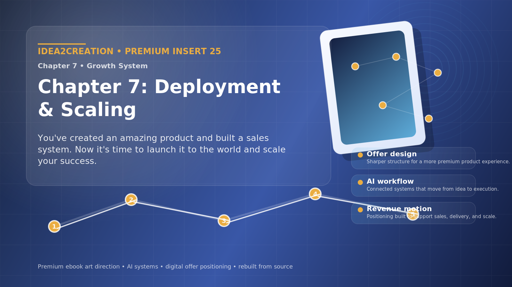
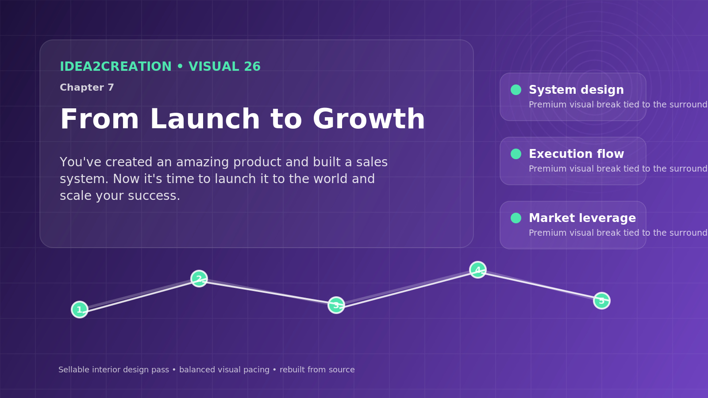
You've created an amazing product and built a sales system. Now it's time to launch it to the world and scale your success. In this chapter, you'll learn deployment strategies, scaling techniques, and growth hacks to turn your single product into a thriving business.
Phase 1: Soft Launch (Week 1)
Phase 2: Core Launch (Week 2)
Phase 3: Public Launch (Week 3+)
Vercel Deployment Configuration:
# vercel.json configuration
{
"version": 2,
"builds": [
{
"src": "sales-page.html",
"use": "@vercel/static"
},
{
"src": "api/**/*.js",
"use": "@vercel/node"
}
],
"routes": [
{
"src": "/",
"dest": "/sales-page.html"
},
{
"src": "/api/(.*)",
"dest": "/api/$1"
},
{
"src": "/(.*)",
"dest": "/sales-page.html"
}
],
"env": {
"PAYPAL_CLIENT_ID": "@paypal-client-id",
"PAYPAL_CLIENT_SECRET": "@paypal-client-secret",
"STRIPE_SECRET_KEY": "@stripe-secret-key",
"EMAIL_SERVICE_KEY": "@email-service-key",
"ANALYTICS_ID": "@analytics-id"
}
}Automated Deployment Script:
#!/bin/bash
# Automated deployment script
echo "Starting deployment process..."
# 1. Build the project
echo "Step 1: Building project..."
npm run build
# 2. Run tests
echo "Step 2: Running tests..."
npm test
if [ $? -ne 0 ]; then
echo "Tests failed. Deployment aborted."
exit 1
fi
# 3. Deploy to staging
echo "Step 3: Deploying to staging..."
vercel --prod -y
# 4. Run smoke tests
echo "Step 4: Running smoke tests..."
./scripts/smoke-test.sh
if [ $? -ne 0 ]; then
echo "Smoke tests failed. Rolling back..."
vercel rollback
exit 1
fi
# 5. Notify team
echo "Step 5: Notifying team..."
./scripts/notify-team.sh "Deployment successful"
# 6. Monitor initial traffic
echo "Step 6: Starting monitoring..."
./scripts/monitor-traffic.sh 3600 # Monitor for 1 hour
echo "Deployment complete!"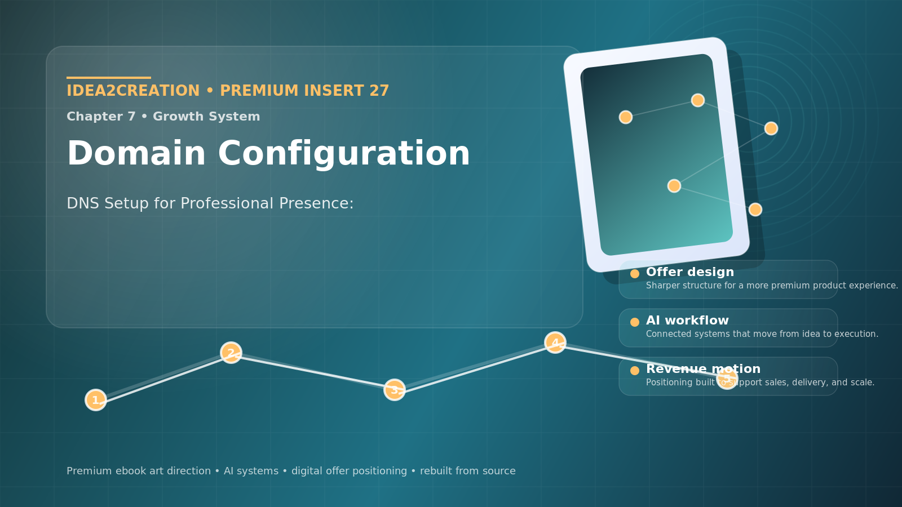
DNS Setup for Professional Presence:
# Configure DNS records
openclaw skills run dns-configurator \
--domain "idea2creation.com" \
--records "
A @ 76.76.21.21
CNAME www @
MX @ mail.idea2creation.com 10
TXT @ 'v=spf1 include:_spf.vercel.app ~all'
TXT _dmarc 'v=DMARC1; p=none; rua=mailto:dmarc@idea2creation.com'
CNAME _vercel @
" \
--provider "cloudflare"SSL Certificate Automation:
# Automated SSL certificate management
#!/bin/bash
# renew-ssl.sh
DOMAIN="idea2creation.com"
EMAIL="admin@idea2creation.com"
# Renew certificate
certbot renew --nginx --quiet
# Check if renewal was successful
if [ $? -eq 0 ]; then
# Reload nginx
systemctl reload nginx
# Test SSL configuration
./test-ssl.sh "$DOMAIN"
# Log success
echo "$(date): SSL certificate renewed for $DOMAIN" >> /var/log/ssl-renewal.log
else
# Send alert
./send-alert.sh "SSL renewal failed for $DOMAIN"
fiFrontend Optimization:
// Lazy loading for images
document.addEventListener('DOMContentLoaded', function() {
const lazyImages = document.querySelectorAll('img[data-src]');
const imageObserver = new IntersectionObserver((entries, observer) => {
entries.forEach(entry => {
if (entry.isIntersecting) {
const img = entry.target;
img.src = img.dataset.src;
img.classList.add('loaded');
observer.unobserve(img);
}
});
});
lazyImages.forEach(img => imageObserver.observe(img));
});
// Critical CSS inlining
function inlineCriticalCSS() {
const criticalCSS = `
/* Critical styles above the fold */
.hero, .header, .cta-button {
/* Essential styles */
}
`;
const style = document.createElement('style');
style.textContent = criticalCSS;
document.head.appendChild(style);
}
// Resource hinting
function addResourceHints() {
// Preconnect to important domains
const hints = [
{ rel: 'preconnect', href: 'https://www.paypal.com' },
{ rel: 'preconnect', href: 'https://fonts.googleapis.com' },
{ rel: 'preload', href: '/fonts/Inter.woff2', as: 'font', type: 'font/woff2', crossorigin: true },
{ rel: 'preload', href: '/images/hero-image.webp', as: 'image' }
];
hints.forEach(hint => {
const link = document.createElement('link');
Object.entries(hint).forEach(([key, value]) => {
link.setAttribute(key, value);
});
document.head.appendChild(link);
});
}Backend Optimization:
// API response caching
const cache = new Map();
async function getCachedResponse(key, fetchFunction, ttl = 300) {
const cached = cache.get(key);
if (cached && Date.now() - cached.timestamp < ttl * 1000) {
return cached.data;
}
const data = await fetchFunction();
cache.set(key, {
data,
timestamp: Date.now()
});
return data;
}
// Database query optimization
class OptimizedDatabase {
constructor() {
this.queryCache = new Map();
this.connectionPool = [];
this.maxConnections = 10;
}
async query(sql, params = []) {
const cacheKey = `${sql}:${JSON.stringify(params)}`;
// Check cache
if (this.queryCache.has(cacheKey)) {
return this.queryCache.get(cacheKey);
}
// Get connection from pool
const connection = await this.getConnection();
try {
const result = await connection.query(sql, params);
// Cache result (except for writes)
if (!sql.trim().toLowerCase().startsWith('insert') &&
!sql.trim().toLowerCase().startsWith('update') &&
!sql.trim().toLowerCase().startsWith('delete')) {
this.queryCache.set(cacheKey, result);
// Clear cache after 5 minutes
setTimeout(() => {
this.queryCache.delete(cacheKey);
}, 300000);
}
return result;
} finally {
this.releaseConnection(connection);
}
}
async getConnection() {
if (this.connectionPool.length > 0) {
return this.connectionPool.pop();
}
if (this.connectionPool.length < this.maxConnections) {
return await this.createConnection();
}
// Wait for available connection
return new Promise(resolve => {
const interval = setInterval(() => {
if (this.connectionPool.length > 0) {
clearInterval(interval);
resolve(this.connectionPool.pop());
}
}, 100);
});
}
releaseConnection(connection) {
this.connectionPool.push(connection);
}
}Optimized Payment Processing:
// Batch payment processing
class PaymentProcessor {
constructor() {
this.paymentQueue = [];
this.processing = false;
this.batchSize = 50;
}
async queuePayment(paymentData) {
this.paymentQueue.push({
...paymentData,
queuedAt: new Date(),
status: 'queued'
});
// Start processing if not already running
if (!this.processing) {
this.processQueue();
}
return { success: true, message: 'Payment queued' };
}
async processQueue() {
this.processing = true;
while (this.paymentQueue.length > 0) {
const batch = this.paymentQueue.splice(0, this.batchSize);
try {
// Process batch in parallel
const results = await Promise.allSettled(
batch.map(payment => this.processSinglePayment(payment))
);
// Handle results
results.forEach((result, index) => {
const payment = batch[index];
if (result.status === 'fulfilled') {
payment.status = 'completed';
payment.completedAt = new Date();
this.logSuccess(payment, result.value);
} else {
payment.status = 'failed';
payment.error = result.reason;
this.logFailure(payment, result.reason);
}
});
} catch (error) {
console.error('Batch processing error:', error);
// Requeue failed batch
this.paymentQueue.unshift(...batch);
// Exponential backoff
await this.delay(Math.min(1000 * 2 ** this.retryCount, 30000));
this.retryCount++;
}
}
this.processing = false;
}
async processSinglePayment(payment) {
// Validate payment
await this.validatePayment(payment);
// Process with payment provider
const result = await this.paymentProvider.charge({
amount: payment.amount,
currency: payment.currency,
customer: payment.customer,
description: payment.description
});
// Update order status
await this.updateOrderStatus(payment.orderId, 'paid');
// Trigger product delivery
await this.deliverProduct(payment);
return result;
}
}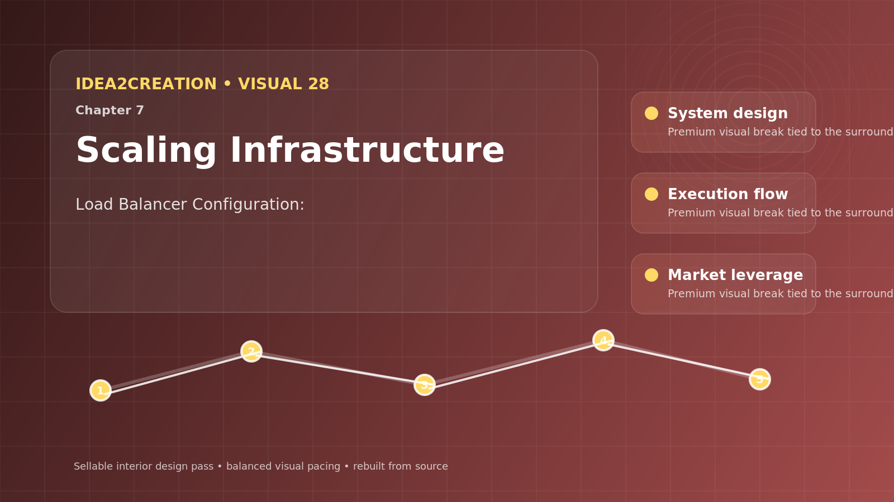
Load Balancer Configuration:
# nginx load balancer configuration
upstream backend {
least_conn;
server backend1.idea2creation.com:3000;
server backend2.idea2creation.com:3000;
server backend3.idea2creation.com:3000;
# Health checks
check interval=3000 rise=2 fall=3 timeout=1000;
}
server {
listen 80;
server_name idea2creation.com;
location / {
proxy_pass http://backend;
proxy_set_header Host $host;
proxy_set_header X-Real-IP $remote_addr;
proxy_set_header X-Forwarded-For $proxy_add_x_forwarded_for;
proxy_set_header X-Forwarded-Proto $scheme;
# Timeouts
proxy_connect_timeout 5s;
proxy_send_timeout 10s;
proxy_read_timeout 10s;
}
# Health check endpoint
location /health {
access_log off;
return 200 "healthy\n";
add_header Content-Type text/plain;
}
}Auto-scaling Configuration:
# Auto-scaling rules based on metrics
openclaw skills run autoscaling-config \
--service "sales-api" \
--metrics "
cpu: >70% for 5 minutes -> +1 instance
cpu: <30% for 15 minutes -> -1 instance
memory: >80% for 5 minutes -> +1 instance
requests: >1000/min for 10 minutes -> +1 instance
error_rate: >5% for 5 minutes -> +1 instance
" \
--min-instances 2 \
--max-instances 10 \
--cooldown 300Read Replica Configuration:
// Database connection with read replicas
class ScalableDatabase {
constructor() {
this.writeConnection = this.createConnection(process.env.DB_PRIMARY);
this.readReplicas = [
this.createConnection(process.env.DB_REPLICA_1),
this.createConnection(process.env.DB_REPLICA_2),
this.createConnection(process.env.DB_REPLICA_3)
];
this.replicaIndex = 0;
}
getReadConnection() {
// Round-robin load balancing
const connection = this.readReplicas[this.replicaIndex];
this.replicaIndex = (this.replicaIndex + 1) % this.readReplicas.length;
return connection;
}
async query(sql, params = [], { useReplica = true } = {}) {
const connection = useReplica && this.isReadQuery(sql)
? this.getReadConnection()
: this.writeConnection;
return await connection.query(sql, params);
}
isReadQuery(sql) {
const lowerSql = sql.trim().toLowerCase();
return lowerSql.startsWith('select') ||
lowerSql.startsWith('show') ||
lowerSql.startsWith('explain');
}
// Connection pooling
createConnection(config) {
return mysql.createPool({
...config,
connectionLimit: 10,
queueLimit: 100,
waitForConnections: true,
enableKeepAlive: true,
keepAliveInitialDelay: 0
});
}
}Database Sharding Strategy:
// Sharded database architecture
class ShardedDatabase {
constructor() {
this.shards = new Map();
this.shardCount = 4;
// Initialize shards
for (let i = 0; i < this.shardCount; i++) {
this.shards.set(i, this.createShardConnection(i));
}
}
getShardForKey(key) {
// Consistent hashing for shard selection
const hash = this.hashString(key);
return hash % this.shardCount;
}
async query(shardKey, sql, params = []) {
const shardId = this.getShardForKey(shardKey);
const shard = this.shards.get(shardId);
return await shard.query(sql, params);
}
async queryAll(sql, params = []) {
// Query all shards in parallel
const promises = Array.from(this.shards.values()).map(
shard => shard.query(sql, params)
);
const results = await Promise.all(promises);
// Combine results
return results.flat();
}
hashString(str) {
let hash = 0;
for (let i = 0; i < str.length; i++) {
hash = ((hash << 5) - hash) + str.charCodeAt(i);
hash |= 0; // Convert to 32-bit integer
}
return Math.abs(hash);
}
}Performance Monitoring:
// Real-time performance metrics
class PerformanceMonitor {
constructor() {
this.metrics = {
responseTimes: [],
errorRates: [],
throughput: [],
resourceUsage: []
};
this.alerts = [];
}
trackRequest(startTime, method, path, statusCode) {
const duration = Date.now() - startTime;
// Store metric
this.metrics.responseTimes.push({
timestamp: new Date(),
duration,
method,
path,
statusCode
});
// Keep only last hour of data
const oneHourAgo = Date.now() - 3600000;
this.metrics.responseTimes = this.metrics.responseTimes.filter(
m => m.timestamp.getTime() > oneHourAgo
);
// Check for anomalies
this.checkAnomalies();
return duration;
}
checkAnomalies() {
const recentRequests = this.metrics.responseTimes.slice(-100);
if (recentRequests.length < 10) return;
// Calculate average response time
const avgResponseTime = recentRequests.reduce(
(sum, req) => sum + req.duration, 0
) / recentRequests.length;
// Check for slow responses
if (avgResponseTime > 1000) { // >1 second
this.triggerAlert('high_response_time', {
average: avgResponseTime,
sampleSize: recentRequests.length
});
}
// Check error rate
const errorCount = recentRequests.filter(
req => req.statusCode >= 400
).length;
const errorRate = errorCount / recentRequests.length;
if (errorRate > 0.05) { // >5% error rate
this.triggerAlert('high_error_rate', {
rate: errorRate,
errors: errorCount,
total: recentRequests.length
});
}
}
triggerAlert(type, data) {
const alert = {
type,
timestamp: new Date(),
data,
resolved: false
};
this.alerts.push(alert);
// Send notification
this.sendNotification(alert);
return alert;
}
sendNotification(alert) {
// Send to various channels
const channels = [
this.sendSlackNotification,
this.sendEmailNotification,
this.sendSMSNotification
];
channels.forEach(channel => {
try {You've learned the basics of OpenClaw and built your first automated business.
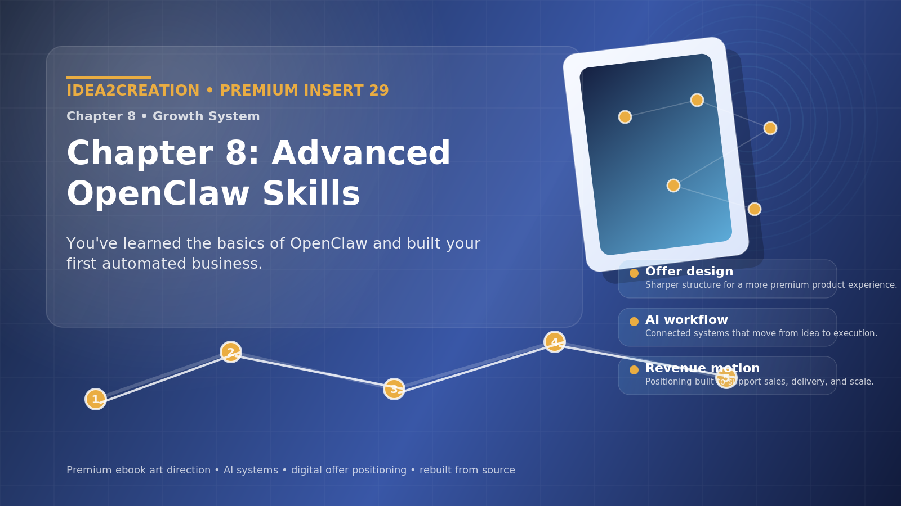
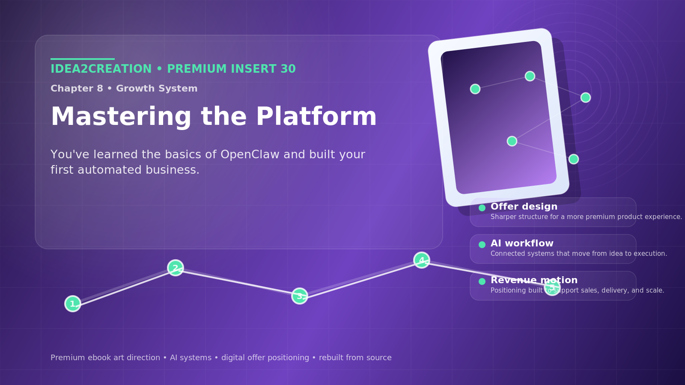
You've learned the basics of OpenClaw and built your first automated business. Now it's time to dive deeper into advanced techniques that will make you a true OpenClaw power user. In this chapter, you'll learn custom skill development, complex workflow orchestration, performance optimization, and integration strategies.
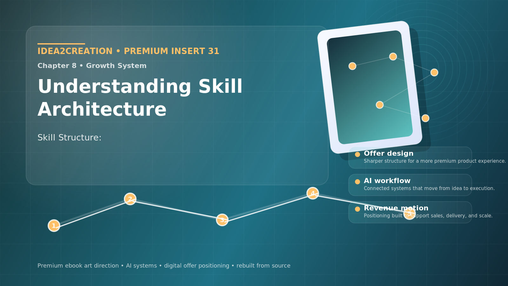
Skill Structure:
my-custom-skill/
├── SKILL.md # Skill documentation
├── package.json # Skill metadata and dependencies
├── index.js # Main skill implementation
├── config/ # Configuration files
│ └── default.yaml
├── scripts/ # Executable scripts
│ ├── setup.sh
│ └── cleanup.sh
├── references/ # Reference materials
│ ├── api-docs.md
│ └── examples.md
└── tests/ # Test files
└── basic.test.jsSKILL.md Structure:
# Skill Name
## Description
Brief description of what the skill does.
## Usage
How to use the skill with examples.
## Configuration
Required configuration and environment variables.
## Dependencies
Any external dependencies or requirements.
## Examples
Practical examples of usage.
## API Reference
Detailed API documentation if applicable.Step 1: Initialize Skill Structure
# Create skill directory
mkdir -p ~/.openclaw/skills/my-first-skill
cd ~/.openclaw/skills/my-first-skill
# Initialize package.json
cat > package.json << EOF
{
"name": "my-first-skill",
"version": "1.0.0",
"description": "My first custom OpenClaw skill",
"main": "index.js",
"scripts": {
"test": "node tests/basic.test.js"
},
"keywords": ["openclaw", "skill"],
"author": "Your Name",
"license": "MIT"
}
EOFStep 2: Create Skill Implementation
// index.js - Main skill implementation
const { Skill } = require('openclaw-sdk');
class MyFirstSkill extends Skill {
constructor() {
super({
name: 'my-first-skill',
version: '1.0.0',
description: 'A custom skill example',
commands: {
greet: {
description: 'Greet someone',
parameters: {
name: {
type: 'string',
description: 'Name to greet',
required: true
}
}
},
processData: {
description: 'Process some data',
parameters: {
input: {
type: 'string',
description: 'Input data',
required: true
},
format: {
type: 'string',
description: 'Output format',
enum: ['json', 'csv', 'text'],
default: 'json'
}
}
}
}
});
}
async greet(params) {
const { name } = params;
return {
success: true,
message: `Hello, ${name}! Welcome to OpenClaw.`,
timestamp: new Date().toISOString()
};
}
async processData(params) {
const { input, format } = params;
try {
let result;
switch (format) {
case 'json':
result = JSON.parse(input);
break;
case 'csv':
result = input.split('\n').map(line => line.split(','));
break;
case 'text':
result = input.toUpperCase();
break;
default:
throw new Error(`Unsupported format: ${format}`);
}
return {
success: true,
data: result,
format,
processedAt: new Date().toISOString()
};
} catch (error) {
return {
success: false,
error: error.message,
timestamp: new Date().toISOString()
};
}
}
// Lifecycle methods
async onInstall() {
console.log('MyFirstSkill installed successfully');
return { success: true };
}
async onUninstall() {
console.log('MyFirstSkill uninstalled');
return { success: true };
}
async onConfigure(config) {
console.log('Configuration updated:', config);
return { success: true };
}
}
module.exports = MyFirstSkill;Step 3: Create Documentation
# My First Skill
## Description
A demonstration skill for OpenClaw that shows basic skill development patterns.
## Usageopenclaw skills run my-first-skill --command greet --name "John"
openclaw skills run my-first-skill --command processData \ --input '{"key": "value"}' \ --format json
## Configuration
No configuration required for basic usage.
## Examples
### Basic Greetingopenclaw skills run my-first-skill --command greet --name "Alice"
Output:{ "success": true, "message": "Hello, Alice! Welcome to OpenClaw.", "timestamp": "2026-04-21T14:30:00.000Z" }
### Data Processingopenclaw skills run my-first-skill --command processData \ --input "name,age,email\nJohn,30,john@example.com\nJane,25,jane@example.com" \ --format csv
## API Reference
### Commands
#### greet
Greets a person by name.
**Parameters:**
- `name` (string, required): Name to greet
**Returns:**{ "success": boolean, "message": string, "timestamp": string }
#### processData
Processes input data in various formats.
**Parameters:**
- `input` (string, required): Input data to process
- `format` (string): Output format (json, csv, text). Default: json
**Returns:**{ "success": boolean, "data": any, "format": string, "processedAt": string, "error": string (if success is false) }
Step 4: Create Tests
// tests/basic.test.js
const MyFirstSkill = require('../index.js');
describe('MyFirstSkill', () => {
let skill;
beforeEach(() => {
skill = new MyFirstSkill();
});
test('greet command works correctly', async () => {
const result = await skill.greet({ name: 'Test User' });
expect(result.success).toBe(true);
expect(result.message).toContain('Test User');
expect(result.timestamp).toBeDefined();
});
test('processData command handles JSON', async () => {
const input = '{"test": "data"}';
const result = await skill.processData({ input, format: 'json' });
expect(result.success).toBe(true);
expect(result.data).toEqual({ test: 'data' });
expect(result.format).toBe('json');
});
test('processData command handles CSV', async () => {
const input = 'a,b,c\n1,2,3';
const result = await skill.processData({ input, format: 'csv' });
expect(result.success).toBe(true);
expect(result.data).toEqual([['a', 'b', 'c'], ['1', '2', '3']]);
});
test('processData command handles invalid input', async () => {
const result = await skill.processData({
input: 'invalid json',
format: 'json'
});
expect(result.success).toBe(false);
expect(result.error).toBeDefined();
});
});Step 5: Install and Test
# Link the skill for development
openclaw skills link ~/.openclaw/skills/my-first-skill
# Test the skill
openclaw skills run my-first-skill --command greet --name "Developer"
# Run tests
cd ~/.openclaw/skills/my-first-skill
npm test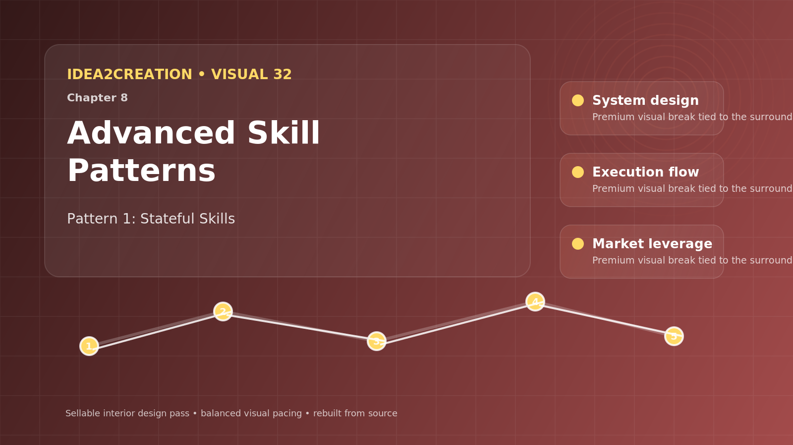
Pattern 1: Stateful Skills
class StatefulSkill extends Skill {
constructor() {
super({
name: 'stateful-skill',
commands: {
setState: { /* ... */ },
getState: { /* ... */ },
increment: { /* ... */ }
}
});
this.state = new Map();
this.stateFile = 'state.json';
this.loadState();
}
async setState(params) {
const { key, value } = params;
this.state.set(key, value);
await this.saveState();
return {
success: true,
message: `State ${key} set to ${value}`
};
}
async getState(params) {
const { key } = params;
const value = this.state.get(key);
return {
success: true,
key,
value: value || null,
exists: this.state.has(key)
};
}
async increment(params) {
const { key, amount = 1 } = params;
const current = parseInt(this.state.get(key) || 0);
const newValue = current + amount;
this.state.set(key, newValue);
await this.saveState();
return {
success: true,
key,
oldValue: current,
newValue,
increment: amount
};
}
async loadState() {
try {
if (fs.existsSync(this.stateFile)) {
const data = fs.readFileSync(this.stateFile, 'utf8');
const state = JSON.parse(data);
this.state = new Map(Object.entries(state));
}
} catch (error) {
console.error('Failed to load state:', error);
}
}
async saveState() {
try {
const stateObj = Object.fromEntries(this.state);
fs.writeFileSync(this.stateFile, JSON.stringify(stateObj, null, 2));
} catch (error) {
console.error('Failed to save state:', error);
}
}
}Pattern 2: Scheduled Tasks
class ScheduledSkill extends Skill {
constructor() {
super({
name: 'scheduled-skill',
commands: {
schedule: { /* ... */ },
listSchedules: { /* ... */ },
cancelSchedule: { /* ... */ }
}
});
this.schedules = new Map();
this.scheduler = null;
}
async schedule(params) {
const { name, cron, command, args = {} } = params;
// Validate cron expression
if (!this.isValidCron(cron)) {
return {
success: false,
error: 'Invalid cron expression'
};
}
// Create schedule
const job = schedule.scheduleJob(cron, async () => {
try {
await this.executeCommand(command, args);
} catch (error) {
console.error(`Schedule ${name} failed:`, error);
}
});
this.schedules.set(name, {
job,
cron,
command,
args,
createdAt: new Date(),
lastRun: null,
nextRun: job.nextInvocation()
});
return {
success: true,
name,
cron,
nextRun: job.nextInvocation(),
message: `Schedule ${name} created successfully`
};
}
async listSchedules() {
const schedules = Array.from(this.schedules.entries()).map(([name, schedule]) => ({
name,
cron: schedule.cron,
command: schedule.command,
createdAt: schedule.createdAt,
lastRun: schedule.lastRun,
nextRun: schedule.nextRun
}));
return {
success: true,
schedules,
count: schedules.length
};
}
async cancelSchedule(params) {
const { name } = params;
if (!this.schedules.has(name)) {
return {
success: false,
error: `Schedule ${name} not found`
};
}
const schedule = this.schedules.get(name);
schedule.job.cancel();
this.schedules.delete(name);
return {
success: true,
name,
message: `Schedule ${name} cancelled`
};
}
isValidCron(cron) {
// Basic cron validation
const parts = cron.split(' ');
return parts.length === 5;
}
async executeCommand(command, args) {
// Execute the scheduled command
console.log(`Executing scheduled command: ${command}`, args);
// Update last run time
// ... implementation ...
}
}Pattern 3: External API Integration
class APIIntegrationSkill extends Skill {
constructor() {
super({
name: 'api-integration',
commands: {
fetchData: { /* ... */ },
postData: { /* ... */ },
webhook: { /* ... */ }
}
});
this.cache = new Map();
this.cacheTTL = 300000; // 5 minutes
}
async fetchData(params) {
const { url, method = 'GET', headers = {}, cache = true } = params;
// Check cache
if (cache) {
const cached = this.getFromCache(url);
if (cached) {
return {
success: true,
data: cached.data,
cached: true,
cachedAt: cached.timestamp
};
}
}
try {
const response = await fetch(url, {
method,
headers: {
'User-Agent': 'OpenClaw/1.0',
...headers
}
});
if (!response.ok) {
throw new Error(`HTTP ${response.status}: ${response.statusText}`);
}
const data = await response.json();
// Cache the result
if (cache) {
this.setCache(url, data);
}
return {
success: true,
data,
cached: false,
status: response.status,
headers: Object.fromEntries(response.headers.entries())
};
} catch (error) {
return {
success: false,
error: error.message,
url,
method
};
}
}
async postData(params) {
const { url, data, headers = {} } = params;
try {
const response = await fetch(url, {
method: 'POST',
headers: {
'Content-Type': 'application/json',
'User-Agent': 'OpenClaw/1.0',
...headers
},
body: JSON.stringify(data)
});
const responseData = await response.json();
return {
success: response.ok,
data: responseData,
status: response.status,
headers: Object.fromEntries(response.headers.entries())
};
} catch (error) {
return {
success: false,
error: error.message,
url
};
}
}
async webhook(params) {
const { url, event, data } = params;
// This would typically be called by other parts of the system
// when certain events occur
try {
const response = await fetch(url, {
method: 'POST',
headers: {
'Content-Type': 'application/json',
'User-Agent': 'OpenClaw-Webhook/1.0'
},
body: JSON.stringify({
event,
data,
timestamp: new Date().toISOString(),
source: 'openclaw'
})
});
return {
success: response.ok,
status: response.status,
event,
deliveredAt: new Date().toISOString()
};
} catch (error) {
return {
success: false,
error: error.message,
event,
attemptedAt: new Date().toISOString()
};
}
}
getFromCache(key) {
const cached = this.cache.get(key);
if (cached && Date.now() - cached.timestamp < this.cacheTTL) {
return cached;
}
// Remove expired cache
if (cached) {
this.cache.delete(key);
}
return null;
}
setCache(key, data) {
this.cache.set(key, {
data,
timestamp: Date.now()
});
// Clean up old cache entries periodically
this.cleanupCache();
}
cleanupCache() {
const now = Date.now();
for (const [key, value] of this.cache.entries()) {
if (now - value.timestamp > this.cacheTTL) {
this.cache.delete(key);
}
}
}
}Complex Workflow Definition:
// complex-workflow.js
const { TaskFlow } = require('openclaw-taskflow');
class ProductLaunchWorkflow extends TaskFlow {
constructor() {
super({
name: 'product-launch-workflow',
version: '1.0.0',
description: 'Complete product launch workflow',
states: {
initialized: {
description: 'Workflow initialized',
transitions: ['research', 'planning']
},
research: {
description: 'Market research phase',
transitions: ['validation', 'back_to_planning']
},
validation: {
description: 'Idea validation',
transitions: ['creation', 'kill_idea']
},
creation: {
description: 'Product creation',
transitions: ['testing', 'back_to_validation']
},
testing: {
description: 'Quality testing',
transitions: ['launch_prep', 'back_to_creation']
},
launch_prep: {
description: 'Launch preparation',
transitions: ['launch', 'delay_launch']
},
launch: {
description: 'Product launch',
transitions: ['post_launch', 'emergency_stop']
},
post_launch: {
description: 'Post-launch activities',
transitions: ['complete', 'iterate']
},
complete: {
description: 'Workflow complete',
final: true
},
kill_idea: {
description: 'Idea killed',
final: true
}
},
initial: 'You've built a successful product and automated your business.
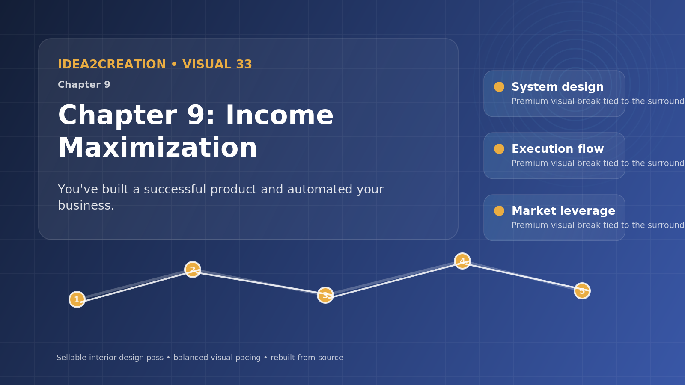
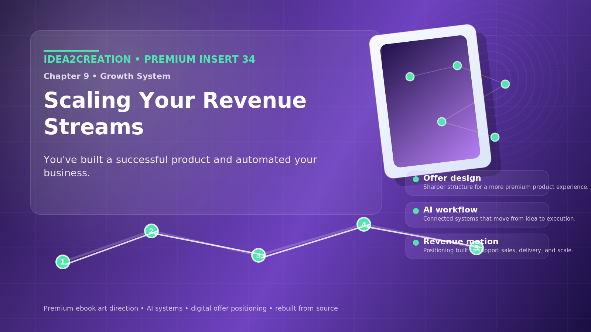
You've built a successful product and automated your business. Now it's time to maximize your income. In this chapter, you'll learn advanced pricing strategies, upsell techniques, customer lifetime value optimization, and business model diversification to take your earnings to the next level.
The 5-Level Pricing Model:
Level 1: Cost-Plus ($27-$97)
- Covers costs plus small profit
- Entry-level positioning
- High volume potential
Level 2: Market-Competitive ($97-$197)
- Matches competitor pricing
- Standard features
- Main revenue stream
Level 3: Value-Based ($197-$497)
- Based on perceived value
- Premium features
- Higher margins
Level 4: Transformational ($497-$997)
- Life-changing results
- Comprehensive solutions
- Premium positioning
Level 5: Enterprise ($997+)
- Custom solutions
- White-label options
- Corporate clientsImplementing Tiered Pricing:
// Dynamic pricing engine
class PricingEngine {
constructor() {
this.tiers = {
basic: {
price: 97,
features: [
'Ebook PDF',
'Basic templates',
'Email support',
'30-day updates'
],
position: 'entry'
},
pro: {
price: 197,
features: [
'Everything in Basic',
'Video tutorials',
'Advanced templates',
'Priority support',
'1-year updates',
'Community access'
],
position: 'main'
},
premium: {
price: 497,
features: [
'Everything in Pro',
'1-on-1 coaching session',
'Custom templates',
'Lifetime updates',
'Private mastermind',
'Early access to new features'
],
position: 'premium'
}
};
this.discounts = {
launch: 0.3, // 30% launch discount
bundle: 0.2, // 20% bundle discount
annual: 0.17, // 2 months free for annual
loyalty: 0.1 // 10% loyalty discount
};
}
calculatePrice(tier, options = {}) {
let basePrice = this.tiers[tier].price;
// Apply discounts
if (options.discount) {
basePrice *= (1 - this.discounts[options.discount]);
}
// Apply bundle pricing
if (options.bundle) {
basePrice *= (1 - this.discounts.bundle);
}
// Apply payment term discount
if (options.paymentTerm === 'annual') {
basePrice *= (1 - this.discounts.annual);
}
// Round to nearest dollar
return Math.round(basePrice);
}
getTierComparison() {
return Object.entries(this.tiers).map(([name, tier]) => ({
name,
price: tier.price,
features: tier.features,
valueScore: this.calculateValueScore(tier),
recommended: this.isRecommendedTier(name)
}));
}
calculateValueScore(tier) {
// Calculate value per dollar
const featureCount = tier.features.length;
const valuePerDollar = featureCount / tier.price;
// Adjust for premium features
const premiumMultiplier = tier.position === 'premium' ? 1.5 : 1;
return (valuePerDollar * 100 * premiumMultiplier).toFixed(1);
}
isRecommendedTier(tierName) {
// Recommend Pro tier as best value
return tierName === 'pro';
}
// Dynamic pricing based on demand
adjustPriceForDemand(tier, demandLevel) {
const basePrice = this.tiers[tier].price;
switch(demandLevel) {
case 'low':
return basePrice * 0.9; // 10% discount
case 'normal':
return basePrice;
case 'high':
return basePrice * 1.1; // 10% premium
case 'very-high':
return basePrice * 1.25; // 25% premium
default:
return basePrice;
}
}
}
// Usage example
const pricing = new PricingEngine();
// Calculate price with launch discount
const launchPrice = pricing.calculatePrice('pro', { discount: 'launch' });
console.log(`Launch price: $${launchPrice}`);
// Get tier comparison
const comparison = pricing.getTierComparison();
console.log('Tier comparison:', comparison);Price Anchoring Implementation:
// Price anchoring system
class PriceAnchoring {
constructor() {
this.anchors = {
decoy: {
name: 'Professional Package',
price: 297,
features: [
'Ebook PDF',
'Basic templates',
'Email support'
],
purpose: 'make_pro_look_better'
},
pro: {
name: 'Pro Package',
price: 197,
features: [
'Ebook PDF',
'All templates',
'Priority support',
'Video tutorials',
'Community access'
],
purpose: 'target_sale'
},
premium: {
name: 'Premium Package',
price: 497,
features: [
'Everything in Pro',
'1-on-1 coaching',
'Custom templates',
'Lifetime updates'
],
purpose: 'increase_perceived_value'
}
};
}
displayPricingPage() {
const packages = Object.values(this.anchors);
// Sort by price
packages.sort((a, b) => a.price - b.price);
// Calculate value indicators
packages.forEach(pkg => {
pkg.valuePerDollar = pkg.features.length / pkg.price;
pkg.popular = pkg.purpose === 'target_sale';
pkg.bestValue = this.calculateBestValue(packages, pkg);
});
return packages;
}
calculateBestValue(packages, currentPackage) {
// The middle package is usually perceived as best value
const middleIndex = Math.floor(packages.length / 2);
return packages.indexOf(currentPackage) === middleIndex;
}
// Charm pricing (ending in 7, 9, or 97)
applyCharmPricing(price) {
const endings = [97, 99, 97];
const base = Math.floor(price / 100) * 100;
const ending = endings[Math.floor(Math.random() * endings.length)];
return base + ending;
}
// Tier highlighting
highlightRecommendedTier(tiers) {
return tiers.map(tier => ({
...tier,
highlighted: tier.popular,
badge: tier.popular ? 'MOST POPULAR' : null,
emphasis: tier.bestValue ? 'BEST VALUE' : null
}));
}
}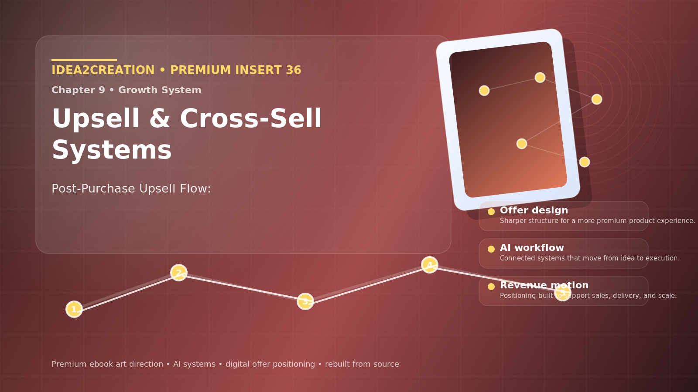
Post-Purchase Upsell Flow:
class UpsellEngine {
constructor() {
this.upsellOffers = {
immediate: {
name: 'Fast Action Bonus',
description: 'Get our premium templates for 50% off if you act now!',
price: 47, // Normally $97
discount: 0.5,
timeframe: 15, // minutes
conditions: ['immediate_post_purchase'],
conversionRate: 0.35 // 35% conversion expected
},
one_click: {
name: 'One-Click Upgrade',
description: 'Upgrade to Pro for just $100 more',
price: 100,
originalPrice: 200,
conditions: ['basic_tier_purchase'],
conversionRate: 0.25
},
bundle: {
name: 'Complete Bundle',
description: 'Get all our products together at 40% off',
price: 297,
originalPrice: 495,
conditions: ['single_product_purchase'],
conversionRate: 0.2
}
};
this.customerHistory = new Map();
}
async triggerUpsell(customerId, purchaseData) {
const customer = await this.getCustomerProfile(customerId);
const applicableOffers = this.getApplicableOffers(customer, purchaseData);
if (applicableOffers.length === 0) {
return null;
}
// Select best offer based on predicted conversion
const bestOffer = this.selectBestOffer(applicableOffers, customer);
// Present upsell
const upsellResult = await this.presentUpsell(customer, bestOffer);
// Track result
await this.trackUpsellResult(customerId, bestOffer, upsellResult);
return upsellResult;
}
getApplicableOffers(customer, purchaseData) {
const offers = [];
for (const [key, offer] of Object.entries(this.upsellOffers)) {
if (this.checkConditions(offer.conditions, customer, purchaseData)) {
offers.push({
...offer,
key,
predictedConversion: this.predictConversion(offer, customer)
});
}
}
// Sort by predicted conversion rate
return offers.sort((a, b) => b.predictedConversion - a.predictedConversion);
}
checkConditions(conditions, customer, purchaseData) {
for (const condition of conditions) {
switch(condition) {
case 'immediate_post_purchase':
// Check if purchase just happened
const minutesSincePurchase = (Date.now() - purchaseData.timestamp) / (1000 * 60);
if (minutesSincePurchase > 15) return false;
break;
case 'basic_tier_purchase':
if (purchaseData.tier !== 'basic') return false;
break;
case 'single_product_purchase':
if (customer.totalPurchases > 1) return false;
break;
case 'high_value_customer':
if (customer.lifetimeValue < 500) return false;
break;
}
}
return true;
}
predictConversion(offer, customer) {
let baseRate = offer.conversionRate;
// Adjust based on customer history
if (customer.previousUpsellConversions > 0) {
baseRate *= 1.2; // 20% higher if they've bought upsells before
}
if (customer.lifetimeValue > 1000) {
baseRate *= 1.3; // 30% higher for high-value customers
}
// Time of day adjustment
const hour = new Date().getHours();
if (hour >= 9 && hour <= 17) {
baseRate *= 1.1; // 10% higher during business hours
}
return Math.min(baseRate, 0.8); // Cap at 80%
}
selectBestOffer(offers, customer) {
// Consider both conversion rate and profit
const scoredOffers = offers.map(offer => ({
...offer,
score: this.calculateOfferScore(offer, customer)
}));
return scoredOffers.sort((a, b) => b.score - a.score)[0];
}
calculateOfferScore(offer, customer) {
const profit = offer.price * offer.predictedConversion;
const customerSatisfactionImpact = this.estimateSatisfactionImpact(offer, customer);
return (profit * 0.7) + (customerSatisfactionImpact * 0.3);
}
async presentUpsell(customer, offer) {
// Create personalized upsell message
const message = this.createUpsellMessage(customer, offer);
// Present via appropriate channel
let result;
if (customer.onWebsite) {
result = await this.presentModalUpsell(customer, message, offer);
} else if (customer.email) {
result = await this.sendEmailUpsell(customer, message, offer);
}
return result;
}
createUpsellMessage(customer, offer) {
const templates = {
immediate: `Hi ${customer.name}, since you just purchased ${customer.lastPurchase},
we're offering you ${offer.name} for ${offer.discount * 100}% off!
This offer expires in ${offer.timeframe} minutes.`,
upgrade: `Hi ${customer.name}, you're currently using our Basic tier.
Upgrade to ${offer.name} for just $${offer.price} more and get:
${offer.description}`,
bundle: `Hi ${customer.name}, you'll love our ${offer.name}!
Get everything we offer at ${(1 - offer.price/offer.originalPrice) * 100}% off.`
};
return templates[offer.key.split('_')[0]] || templates.immediate;
}
}Intelligent Product Recommendations:
class RecommendationEngine {
constructor() {
this.products = {
'ebook-ai': {
name: 'AI Automation Ebook',
category: 'education',
price: 97,
tags: ['ai', 'automation', 'beginner']
},
'templates-pro': {
name: 'Professional Templates',
category: 'tools',
price: 147,
tags: ['templates', 'advanced', 'time-saver']
},
'course-advanced': {
name: 'Advanced AI Course',
category: 'education',
price: 297,
tags: ['ai', 'advanced', 'video']
},
'consulting': {
name: '1-on-1 Consulting',
category: 'service',
price: 997,
tags: ['premium', 'personal', 'expert']
}
};
this.customerProfiles = new Map();
this.purchaseHistory = new Map();
}
async getRecommendations(customerId, context = {}) {
const customer = await this.getCustomerProfile(customerId);
const history = this.purchaseHistory.get(customerId) || [];
// Multiple recommendation strategies
const strategies = [
this.contentBasedFiltering(customer, history),
this.collaborativeFiltering(customerId),
this.popularityBased(),
this.contextBased(context)
];
// Combine and rank recommendations
const allRecs = [].concat(...strategies);
const ranked = this.rankRecommendations(allRecs, customer);
// Remove already purchased
const purchasedIds = history.map(p => p.productId);
const filtered = ranked.filter(rec => !purchasedIds.includes(rec.productId));
// Return top 3
return filtered.slice(0, 3);
}
contentBasedFiltering(customer, history) {
// Recommend similar products to what they've bought/liked
const recommendations = [];
if (history.length > 0) {
const lastProduct = history[history.length - 1];
const product = this.products[lastProduct.productId];
// Find products with similar tags
for (const [id, p] of Object.entries(this.products)) {
if (id === lastProduct.productId) continue;
const similarity = this.calculateTagSimilarity(product.tags, p.tags);
if (similarity > 0.3) {
recommendations.push({
productId: id,
product: p,
score: similarity * 0.7,
reason: `Similar to ${product.name}`,
strategy: 'content_based'
});
}
}
}
return recommendations;
}
collaborativeFiltering(customerId) {
// "Customers who bought X also bought Y"
const recommendations = [];
const allHistory = Array.from(this.purchaseHistory.values()).flat();
// Find customers with similar purchase patterns
const similarCustomers = this.findSimilarCustomers(customerId);
for (const similarCustomer of similarCustomers) {
const theirPurchases = this.purchaseHistory.get(similarCustomer) || [];
const myPurchases = this.purchaseHistory.get(customerId) || [];
// Find products they bought that I didn't
for (const purchase of theirPurchases) {
if (!myPurchases.find(p => p.productId === purchase.productId)) {
const existing = recommendations.find(r => r.productId === purchase.productId);
if (existing) {
existing.score += 0.1;
existing.reason = `Popular among customers like you`;
} else {
recommendations.push({
productId: purchase.productId,
product: this.products[purchase.productId],
score: 0.1,
reason: `Customers like you bought this`,
strategy: 'collaborative'
});
}
}
}
}
return recommendations;
}
popularityBased() {
// Simply recommend popular products
const purchaseCounts = new Map();
// Count purchases for each product
for (const history of this.purchaseHistory.values()) {
for (const purchase of history) {
purchaseCounts.set(
purchase.productId,
(purchaseCounts.get(purchase.productId) || 0) + 1
);
}
}
// Convert to recommendations
return Array.from(purchaseCounts.entries())
.sort((a, b) => b[1] - a[1])
.slice(0, 5)
.map(([productId, count]) => ({
productId,
product: this.products[productId],
score: count / Math.max(...purchaseCounts.values()),
reason: `Popular choice (${count} purchases)`,
strategy: 'popularity'
}));
}
contextBased(context) {
// Recommend based on current context (time, location, device, etc.)
const recommendations = [];
const now = new Date();
Basic Installation:
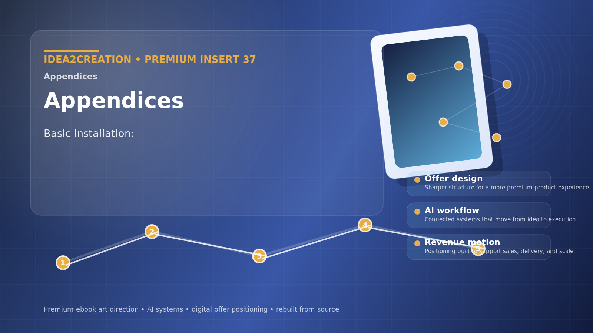
Basic Installation:
# One-line installation
curl -fsSL https://install.openclaw.ai | bash
# Manual installation
git clone https://github.com/openclaw/openclaw.git
cd openclaw
npm install
npm startConfiguration Commands:
# Check OpenClaw status
openclaw status
# View configuration
openclaw config get
# Set configuration values
openclaw config set port 3000
openclaw config set workspace.path "/path/to/workspace"
# Reset to defaults
openclaw config resetSkill Installation:
# Install from ClawHub
openclaw skills install idea-generator
# Install from GitHub
openclaw skills install https://github.com/user/skill-repo
# Install specific version
openclaw skills install skill-name@1.2.3
# Install from local directory
openclaw skills link /path/to/local/skillSkill Management:
# List installed skills
openclaw skills list
# Update a skill
openclaw skills update skill-name
# Remove a skill
openclaw skills remove skill-name
# Check skill status
openclaw skills status skill-name
# Run a skill command
openclaw skills run skill-name --command command-name --param valueSkill Development:
# Create new skill template
openclaw skills new my-skill
# Test a skill
openclaw skills test skill-name
# Publish to ClawHub
openclaw skills publishProject Operations:
# Create new project
openclaw projects create my-project
# List projects
openclaw projects list
# Switch to project
openclaw projects use my-project
# Archive project
openclaw projects archive my-project
# Export project
openclaw projects export my-project --output backup.zipFile Operations:
# List files in workspace
openclaw files list
# Read file
openclaw files read path/to/file.md
# Write file
openclaw files write path/to/file.md --content "Hello World"
# Edit file
openclaw files edit path/to/file.md --search "old" --replace "new"
# Delete file
openclaw files delete path/to/file.mdAgent Control:
# List available agents
openclaw agents list
# Start an agent
openclaw agents start agent-name
# Stop an agent
openclaw agents stop agent-name
# Restart an agent
openclaw agents restart agent-name
# View agent logs
openclaw agents logs agent-name
# Configure agent
openclaw agents config agent-name --setting valueAgent Communication:
# Send message to agent
openclaw agents message agent-name "Hello, do this task"
# Get agent status
openclaw agents status agent-name
# Set agent priority
openclaw agents priority agent-name highWorkflow Management:
# Create new workflow
openclaw workflows create my-workflow --template standard
# List workflows
openclaw workflows list
# Start workflow
openclaw workflows start my-workflow --param value
# Check workflow status
openclaw workflows status workflow-id
# Pause workflow
openclaw workflows pause workflow-id
# Resume workflow
openclaw workflows resume workflow-id
# Cancel workflow
openclaw workflows cancel workflow-idWorkflow Templates:
# List available templates
openclaw workflows templates
# Create from template
openclaw workflows create-from-template template-name my-workflow
# Export workflow as template
openclaw workflows export-as-template workflow-id template-nameSystem Information:
# Version information
openclaw --version
openclaw version
# System status
openclaw system status
# Health check
openclaw system health
# Resource usage
openclaw system resourcesBackup & Recovery:
# Create backup
openclaw backup create --output backup.tar.gz
# Restore from backup
openclaw backup restore backup.tar.gz
# List backups
openclaw backup list
# Schedule automatic backups
openclaw backup schedule --daily --keep 7Log Management:
# View logs
openclaw logs
# Follow logs (real-time)
openclaw logs --follow
# Filter logs
openclaw logs --level error
openclaw logs --agent agent-name
openclaw logs --since "2 hours ago"
# Clear logs
openclaw logs clearidea-generator
generate, analyze, validateopenclaw skills run idea-generator --topic "digital products"create-business
create, plan, launchopenclaw skills run create-business --type "ebook"stripe-setup
configure, test, webhookopenclaw skills run stripe-setup --action configuregithub
pr, issue, deployopenclaw skills run github --command pr --action createtaskflow
create, run, monitoropenclaw skills run taskflow --workflow "product-launch"summarize
summarize, extract, transcribeopenclaw skills run summarize --url "https://example.com"weather
current, forecast, alertsopenclaw skills run weather --location "New York"timezone
convert, schedule, meetingopenclaw skills run timezone --from "UTC" --to "EST"skill-creator
new, build, testopenclaw skills run skill-creator --action new --name "my-skill"code-review
review, lint, securityopenclaw skills run code-review --file "script.js"api-test
test, monitor, documentopenclaw skills run api-test --url "https://api.example.com"seo-analyzer
analyze, keywords, backlinksopenclaw skills run seo-analyzer --url "https://example.com"social-media
post, schedule, analyzeopenclaw skills run social-media --platform "twitter" --action postemail-marketing
campaign, sequence, analyzeopenclaw skills run email-marketing --action create-campaignmetrics-tracker
track, report, alertopenclaw skills run metrics-tracker --metric "conversion-rate"data-visualization
chart, dashboard, exportopenclaw skills run data-visualization --data "sales.csv" --type "line"predictive-analytics
predict, forecast, trendopenclaw skills run predictive-analytics --data "historical.csv" --horizon 30composio-cli
connect, run, listenopenclaw skills run composio-cli --tool "slack" --action send-messagewebhook-manager
create, test, monitoropenclaw skills run webhook-manager --endpoint "/webhook"api-gateway
route, secure, cacheopenclaw skills run api-gateway --upstream "https://api.example.com"Issue: OpenClaw won't start
# Check if port is in use
sudo lsof -i :3000
# Check logs for errors
openclaw logs --level error
# Reset configuration
openclaw config reset
# Reinstall if necessary
curl -fsSL https://install.openclaw.ai | bash -s -- --forceIssue: Skills not loading
# Check skill dependencies
openclaw skills status skill-name
# Update all skills
openclaw skills update --all
# Clear skill cache
rm -rf ~/.openclaw/cache/skills
# Reinstall problematic skill
openclaw skills remove skill-name
openclaw skills install skill-nameIssue: Performance problems
# Check resource usage
openclaw system resources
# Increase memory limit
openclaw config set memory.limit 4096
# Reduce concurrent tasks
openclaw config set concurrency.max 2
# Clear temporary files
openclaw system cleanupIssue: Payment integration failing
# Test payment connection
openclaw skills run stripe-setup --action test
# Check webhook configuration
openclaw skills run stripe-setup --action webhook-status
# Verify API keys
openclaw secrets list | grep stripe
# Test with sandbox mode
openclaw config set stripe.mode sandbox"Skill not found"
openclaw skills install skill-nameopenclaw skills list"Permission denied"
chmod +x /path/to/filechown -R $USER:$USER ~/.openclawsudo or change port"Out of memory"
openclaw config set memory.limit 2048"Connection refused"
openclaw statusopenclaw config get port"Invalid API key"
Quick Performance Fixes:
# 1. Clear cache
openclaw system cleanup
# 2. Restart services
openclaw restart
# 3. Limit concurrent tasks
openclaw config set concurrency.max 3
# 4. Increase memory
openclaw config set memory.limit 4096
# 5. Enable compression
openclaw config set compression.enabled trueMonitoring Performance:
# Real-time monitoring
openclaw system monitor
# Performance report
openclaw system performance-report
# Bottleneck identification
openclaw system bottlenecks
# Resource usage history
openclaw system history --hours 24Common Security Problems:
# Check for exposed keys
openclaw security scan --secrets
# Rotate compromised keys
openclaw secrets rotate # Check password strength
openclaw security check-passwords
# Enforce strong passwords
openclaw config set security.password.minStrength 80 # Check for updates
openclaw system updates
# Apply updates
openclaw system update # Check backup status
openclaw backup status
# Create immediate backup
openclaw backup create --nowSecurity Best Practices:
# Enable automatic updates
openclaw config set updates.auto true
# Enable audit logging
openclaw config set audit.enabled true
# Set session timeout
openclaw config set security.session.timeout 3600
# Enable rate limiting
openclaw config set security.rateLimit.enabled trueDevelopment Tools:
Design Tools:
Marketing Tools:
Payment Processors:
Hosting Services:
OpenClaw Documentation:
AI & Automation Courses:
Business & Marketing:
Technical Skills:
Sales Page Templates:
/templates/sales-pages/Email Sequence Templates:
/templates/email-sequences/Product Creation Templates:
/templates/products/Legal Templates:
/templates/legal/Official Channels:
Community Guidelines:
Getting Help:
Contributing:
Background:
Implementation: